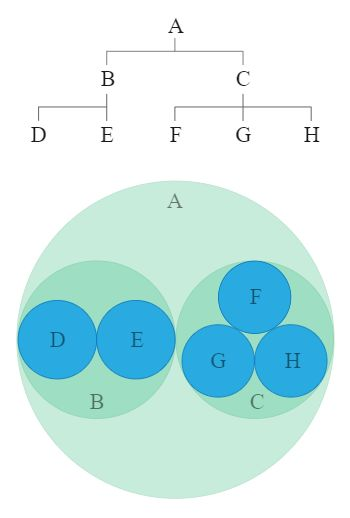

نمودارهای قوسی روشی جایگزین برای نمایش نمودارهای شبکه دو بعدی هستند. در نمودارهای قوس، گره ها در امتداد یک خط قرار می گیرند (یک محور تک بعدی) و از کمان ها برای نشان دادن اتصالات بین آن گره ها استفاده می شود. نمودارهای قوس میتوانند در یافتن همروی دادهها مفید باشند. نقطه ضعف نمودارهای قوسی این است که ساختار و اتصالات بین گرهها و همچنین نمودارهای دوبعدی را نشان نمیدهند و تعداد زیاد لینکها میتوانند به دلیل به هم ریختگی، خواندن نمودار را سخت کنند.
کاربردها : الگوها - روابط
نمودارهای ناحیه، نمودارهای خطی هستند اما ناحیه زیر خط با رنگ یا بافت خاصی پر شده است. نمودارهای مساحتی با رسم نقاط داده بر روی یک شبکه مختصات دکارتی، پیوستن یک خط بین نقاط و در نهایت پر کردن فضای زیر خط تکمیل شده ترسیم می شوند. مانند نمودارهای خطی، نمودارهای ناحیه ای برای نمایش توسعه مقادیر کمی در یک بازه زمانی یا دوره زمانی استفاده می شوند. آنها بیشتر برای نشان دادن روندها به جای انتقال مقادیر خاص استفاده می شوند. دو نوع محبوب نمودارهای منطقه عبارتند از: نمودارهای منطقه گروهی و انباشته شده. نمودارهای منطقه گروهی از همان محور صفر شروع می شوند، در حالی که نمودارهای ناحیه پشته ای هر سری داده از نقطه ای که سری داده های قبلی باقی مانده شروع می شوند.
کاربردها : الگوها - داده ها در طول زمان
همچنین به عنوان Bar Graph یا Column Graph شناخته می شود. نمودار میله ای از میله های افقی یا عمودی (نمودار ستونی) برای نشان دادن مقایسه های عددی گسسته در بین دسته ها استفاده می کند. یکی از محورهای نمودار، مقولههای خاص در حال مقایسه را نشان میدهد و محور دیگر مقیاس مقادیر گسسته را نشان میدهد. نمودارهای میله ای از هیستوگرام ها متمایز می شوند، زیرا پیشرفت های مداوم را در یک بازه زمانی نمایش نمی دهند. در عوض، داده های گسسته نمودار میله ای طبقه بندی شده است و بنابراین به این سوال پاسخ می دهد که "چند؟" در هر دسته

کاربردها : مقایسه - الگوها
نمودار جعبه و ویسکر (یا باکس پلات) روشی مناسب برای نمایش بصری توزیع داده ها از طریق چارک های آنهاست. خطوطی که به موازات جعبه ها کشیده می شوند به عنوان "سبیل" شناخته می شوند که برای نشان دادن تغییرپذیری در خارج از چارک های بالایی و پایینی استفاده می شود. نقاط پرتگاهی به صورت نقاط منفرد که در راستای سبیل ها هستند ترسیم می شوند. نمودارهای جعبه را می توان به صورت عمودی یا افقی ترسیم کرد. نمودارهای جعبه ای این مزیت را دارند که فضای کمتری را اشغال می کنند که هنگام مقایسه توزیع بین گروه ها یا مجموعه های داده بسیار مفید است. دو مورد از متداولترین گونههای باکس پلات عبارتند از: باکس پلات با پهنای متغیر و باکس پلات با شکاف.
کاربردها : توزیع - دامنه
هنگام گروه بندی: مقایسه - الگوها

همانطور که به عنوان نقشه ذهنی شناخته می شود. طوفان فکری نموداری است که برای ترسیم ایده ها، کلمات، تصاویر و مفاهیم مرتبط با هم استفاده می شود. طوفان فکری همچنین ابزار و روشی برای ایده پردازی، یافتن تداعی، طبقه بندی ایده ها، سازماندهی اطلاعات، تجسم ساختار و کمک کلی برای مطالعه است. طوفان فکری اغلب در مرحله اولیه یک پروژه استفاده می شود و به عنوان نوعی یادداشت برداری عمل می کند. آنها همچنین می توانند در کار همکاری و روحیه تیم سازی مفید باشند. ساختار یک طوفان فکری به شرح زیر است: دسته بندی های اصلی از یک گره مرکزی خارج می شوند. دسته های کوچکتر از دسته های اصلی به عنوان زیرمجموعه منشعب می شوند، که می توانند زیرمجموعه های مرتبط خود را نیز توسعه دهند.
کاربردها : مفاهیم - روابط
نمودار حبابی یک نمودار چند متغیره است که تلاقی بین نمودار پراکندگی و نمودار مساحت متناسب است. نمودارهای حباب مانند Scatterplot از یک سیستم مختصات دکارتی برای رسم نقاط در امتداد یک شبکه استفاده می کنند که در آن محور X و Y متغیرهای جداگانه هستند. با این حال. برخلاف Scatterplot، به هر نقطه یک برچسب یا دسته اختصاص داده می شود. سپس هر نقطه رسم شده یک متغیر سوم را با مساحت دایره خود نشان می دهد. رنگ ها همچنین می توانند برای تمایز بین دسته ها استفاده شوند یا برای نشان دادن یک متغیر داده اضافی استفاده شوند. زمان را می توان با قرار دادن آن به عنوان یک متغیر در یکی از محورها یا با متحرک کردن متغیرهای داده در حال تغییر در طول زمان نشان داد. نمودار حبابی معمولاً برای مقایسه و نشان دادن روابط بین دایره های طبقه بندی شده با استفاده از موقعیت و نسبت ها استفاده می شود. تصویر کلی نمودارهای حباب را می توان برای تجزیه و تحلیل الگوها/همبستگی ها استفاده کرد. مانند نمودارهای مساحت متناسب، اندازه دایره ها باید بر اساس مساحت دایره ترسیم شوند، نه شعاع یا قطر آن. نه تنها اندازه دایره ها به صورت تصاعدی تغییر می کند، بلکه منجر به تفسیرهای نادرست توسط سیستم بینایی انسان می شود.
کاربردها : مقایسه ها - داده ها در طول زمان - توزیع - الگوها - نسبت ها - روابط
با این نقشه داده ها، دایره ها بر روی یک منطقه جغرافیایی تعیین شده با مساحت هر دایره متناسب با مقدار آن در مجموعه داده نمایش داده می شوند. نقشه های حبابی برای مقایسه نسبت ها در مناطق جغرافیایی بدون مسائل ناشی از اندازه منطقه، همانطور که در نقشه های Choropleth دیده می شود، خوب هستند. با این حال، یک نقص عمده در Bubble Maps این است که حبابهای بیش از حد بزرگ میتوانند با حبابها و مناطق دیگر روی نقشه همپوشانی داشته باشند، بنابراین باید در نظر گرفته شود.
کاربردها : مکان - تناسبات
نمودار گلولهای که معمولاً برای نمایش دادههای عملکرد استفاده میشود، مانند نمودار میلهای عمل میکند، اما با عناصر بصری اضافی برای بستهبندی در زمینه بیشتر همراه است. در یک نمودار گلوله، مقدار داده اصلی با طول با نوار در مرکز نمودار، که به عنوان اندازه گیری ویژگی شناخته می شود، کدگذاری می شود. نشانگر خطی که عمود بر جهت نمودار اجرا می شود به عنوان مقایسه ای شناخته می شود و به عنوان نشانگر هدف برای مقایسه با مقدار اندازه گیری ویژگی استفاده می شود. بنابراین اگر نوار اصلی از موقعیت مقایسه مقایسه شده باشد، می دانید که به هدف خود رسیده اید. نوارهای رنگی تقسیمبندی شده در پشت اندازهگیری ویژگی برای نمایش امتیازهای محدوده کیفی استفاده میشود. هر سایه رنگی (سه سایه خاکستری در مثال بالا) برای تعیین رتبه بندی محدوده عملکرد استفاده می شود. به عنوان مثال، ضعیف، متوسط و عالی. هنگام استفاده از نمودارهای گلوله، ایده آل است که حداکثر تعداد محدوده عملکرد را تا پنج نگه دارید.
کاربردها : مقایسه ها - محدوده ها
 تقویم (Calendar)
تقویم (Calendar)
-----
کاربردها : داده در طول زمان - ابزار مرجع
نمودارهای کندل استیک چند تا از اطلاعات قیمت مانند قیمت باز، قیمت بسته، بالاترین قیمت و پایین ترین قیمت را با استفاده از نمادهای شمعدانی نمایش می دهند. هر نماد نشان دهنده فعالیت معاملاتی فشرده شده برای یک دوره زمانی (یک دقیقه، ساعت، روز، ماه و غیره) است. هر نماد Candlestick در امتداد یک مقیاس زمانی در محور x رسم می شود تا فعالیت معاملاتی را در طول زمان نشان دهد. مستطیل اصلی در نماد به عنوان بدنه واقعی شناخته می شود که برای نمایش بازه بین قیمت باز و بسته آن دوره زمانی استفاده می شود. در حالی که خطوط امتداد یافته از پایین و بالای بدن واقعی به عنوان سایه های پایین و بالایی شناخته می شوند. هر سایه نشان دهنده بالاترین یا کمترین قیمت معامله شده در طول دوره زمانی ارائه شده است. وقتی بازار صعودی است، بدنه معمولاً سفید یا سبز رنگ می شود. اما وقتی بازار نزولی است، بدنه معمولاً سیاه یا قرمز رنگ می شود.
کاربردها : داده ها در طول زمان - الگوها - محدوده ها
این نوع نمودار روابط متقابل بین موجودیت ها را به تصویر می کشد. ارتباطات بین موجودیت ها برای نشان دادن اینکه آنها چیزی مشترک دارند استفاده می شود. این باعث می شود نمودارهای آکورد برای مقایسه شباهت ها در یک مجموعه داده یا بین گروه های مختلف داده ایده آل باشد. گرهها در امتداد یک دایره مرتب شدهاند و روابط بین نقاط از طریق استفاده از کمان یا منحنیهای بزیه به یکدیگر متصل میشوند. مقادیر به هر اتصال اختصاص داده می شود که به طور متناسب با اندازه هر قوس نشان داده می شود. رنگ را می توان برای گروه بندی داده ها در دسته های مختلف استفاده کرد که به مقایسه و تمایز گروه ها کمک می کند. در هم ریختگی بیش از حد در نمودارهای آکورد زمانی که تعداد زیادی اتصال نمایش داده می شود به یک مشکل تبدیل می شود.
کاربردها : مقایسه ها - روابط
مناطق یا مناطق جغرافیایی تقسیمبندی شده را نشان میدهد که در رابطه با یک متغیر داده رنگی، سایهدار یا طرحدار هستند. این روشی را برای تجسم مقادیر در یک منطقه جغرافیایی فراهم می کند، که می تواند تغییرات یا الگوها را در سراسر مکان نمایش داده شده نشان دهد. متغیر داده از پیشرفت رنگ برای نشان دادن خود در هر منطقه از نقشه استفاده می کند. به طور معمول، این می تواند ترکیبی از یک رنگ به رنگ دیگر، پیشرفت یک رنگ، شفاف به مات، روشن به تیره یا یک طیف رنگی کامل باشد. یکی از نکات منفی استفاده از رنگ این است که نمیتوانید مقادیر را دقیقاً از نقشه بخوانید یا مقایسه کنید. مسئله دیگر این است که مناطق بزرگتر بیشتر از مناطق کوچکتر تأکید شده به نظر می رسند، بنابراین درک بیننده از مقادیر سایه دار تحت تاثیر قرار می گیرد. یک خطای رایج در هنگام تولید این نقشه ها رمزگذاری مقادیر داده خام (مانند جمعیت) به جای استفاده از مقادیر نرمال شده (مثلاً محاسبه جمعیت در هر کیلومتر مربع) برای تهیه نقشه چگالی است.

کاربردها : مقایسه ها - موقعیت مکانی - الگوها
همچنین به عنوان یک Treemap دایره ای شناخته می شود. بسته بندی دایره تنوع یک Treemap است که به جای مستطیل از حلقه ها استفاده می کند. مهار در هر دایره نشان دهنده یک سطح در سلسله مراتب است: هر شاخه از درخت به عنوان یک دایره نشان داده می شود و شاخه های زیر آن به عنوان دایره ای در داخل آن نشان داده می شوند. از مساحت هر دایره نیز می توان برای نشان دادن یک مقدار دلخواه اضافی مانند کمیت یا اندازه پرونده استفاده کرد. همچنین ممکن است از رنگ برای اختصاص دسته ها یا نشان دادن متغیر دیگر از طریق سایه های مختلف استفاده شود. به همان اندازه که بسته بندی دایره ای زیبا به نظر می رسد ، به همان اندازه یک فضا کارآمد نیست ، زیرا فضای خالی زیادی در محافل وجود دارد. با وجود این ، بسته بندی دایره در واقع ساختار سلسله مراتبی را بهتر از یک treemap نشان می دهد.
کاربردها : سلسله مراتب - نسبت ها
همچنین به عنوان نقشه لینک یا نقشه ری نیز شناخته می شود. نقشه های اتصال با اتصال نقاطی که روی نقشه به وسیله خطوط مستقیم یا منحنی قرار می گیرند، ترسیم می شوند. در حالی که نقشه های اتصال برای نشان دادن اتصالات و روابط از نظر جغرافیایی عالی هستند، می توانند برای نمایش مسیرهای نقشه از طریق یک زنجیره واحد از پیوندها نیز استفاده شوند. نقشه های اتصال همچنین می توانند در آشکارسازی الگوهای فضایی از طریق توزیع اتصالات یا نحوه متمرکز بودن اتصالات روی نقشه مفید باشند.
کاربردها : توزیع - مکان - حرکت - الگوهای - روابط
همچنین به عنوان نمودار تراکم هسته یا نمودار ردیابی چگالی شناخته می شود. نمودار چگالی توزیع داده ها را در یک بازه یا دوره زمانی پیوسته به تصویر می کشد. این نمودار نوعی از هیستوگرام است که از هموارسازی هسته برای ترسیم مقادیر استفاده میکند و با هموار کردن نویز، امکان توزیع نرمتر را فراهم میکند. پیک های نمودار چگالی به نمایش جایی که مقادیر در بازه متمرکز شده اند کمک می کند. مزیتی که نمودارهای چگالی نسبت به هیستوگرام دارند این است که در تعیین شکل توزیع بهتر عمل می کنند، زیرا تحت تأثیر تعداد سطل های استفاده شده قرار نمی گیرند (هر نوار در یک هیستوگرام معمولی استفاده می شود). یک هیستوگرام متشکل از تنها 4 سطل، به اندازه یک هیستوگرام 20 بانی، شکل توزیع قابل تشخیصی را ایجاد نمی کند. با این حال، با Density Plots، این یک مشکل نیست.
کاربردها : توزیع - الگوها
نمودار دونات اساسا یک نمودار دایره ای است اما با ناحیه مرکز بریده شده است. با این حال، نمودارهای دونات یک مزیت جزئی نسبت به نمودارهای دایره ای دارند، که گاهی اوقات به دلیل تمرکز بر اندازه نسبی قطعات نسبت به یکدیگر و به طور کلی نمودار مورد انتقاد قرار می گیرند، و هیچ نشانه ای از تغییرات در کل در مقایسه با نمودارهای دایره دیگر نشان نمی دهند. نمودار دونات تا حدی این مشکل را با عدم تاکید بر استفاده از مساحت برطرف می کند تا بیننده را بیشتر بر روی تغییرات در مقادیر کلی متمرکز کند. شما به جای مقایسه نسبت بین برش ها، بر خواندن طول کمان ها متمرکز شده اید. همچنین، نمودارهای دونات نسبت به نمودارهای پای فضا کارآمدتر هستند، زیرا از فضای خالی داخل نمودار دونات می توان برای نمایش اطلاعات داخل آن استفاده کرد.
کاربردها : مقایسه ها - قسمت به یک کل - تناسبات
همچنین به عنوان نقشه نقطه، نقشه توزیع نقطه، نقشه چگالی نقطه شناخته می شود. نقشه های نقطه ای روشی برای تشخیص الگوهای فضایی یا توزیع داده ها بر روی یک منطقه جغرافیایی، با قرار دادن نقاط با اندازه مساوی بر روی یک منطقه جغرافیایی است. دو نوع نقشه نقطه وجود دارد: یک به یک (یک نقطه نشان دهنده یک تعداد یا شی واحد است) و یک به چند (یک نقطه نشان دهنده یک واحد خاص است، به عنوان مثال 1 نقطه = 10 درخت). نقشههای نقطهای برای مشاهده نحوه توزیع اشیاء در یک منطقه جغرافیایی ایدهآل هستند و میتوانند الگوها را هنگام جمع شدن نقاط روی نقشه نشان دهند. درک نقشه های نقطه ای آسان است و در ارائه یک نمای کلی از داده ها بهتر است، اما برای بازیابی مقادیر دقیق عالی نیستند.
کاربردها : توزیع - مکان - الگوها
نمودارهای ماتریس نقطه ای داده های محتاطانه را از طریق مجموعه ای از نقاط سازماندهی شده نمایش می دهند که هر کدام برای نمایش یک دسته خاص رنگی شده و در یک ماتریس گروه بندی شده اند. آنها برای ارائه یک نمای کلی سریع از توزیع و نسبت هر دسته در یک مجموعه داده استفاده می شوند. نمودارهای ماتریس نقطهای نیز برای مقایسه توزیع و نسبت بین سایر مجموعههای داده، برای کشف الگوها استفاده میشوند. هنگامی که فقط یک دسته در مجموعه داده استفاده می شود و همه نقاط یک رنگ هستند، نمودار ماتریس نقطه ای را می توان برای نمایش نسبت ها استفاده کرد.
کاربردها : مقایسه - توزیع - الگوها - تناسب
نوارهای خطا به نشان دادن خطای تخمینی یا عدم قطعیت کمک می کند تا یک حس کلی از دقیق بودن اندازه گیری به دست دهد. به طور معمول، نوارهای خطا برای نمایش انحراف استاندارد، خطای استاندارد، فواصل اطمینان یا حداقل و حداکثر مقادیر در مجموعه داده های محدوده استفاده می شود. برای تجسم این اطلاعات، نوارهای خطا با رسم خطوط سرپوشی کار می کنند که از مرکز نقطه داده رسم شده (یا لبه با نمودار میله ای) امتداد می یابند. طول یک نوار خطا به آشکار کردن عدم قطعیت یک نقطه داده کمک می کند: یک نوار خطای کوتاه نشان می دهد که مقادیر متمرکز هستند، نشان می دهد که مقدار میانگین رسم شده محتمل تر است، در حالی که یک نوار خطای طولانی نشان می دهد که مقادیر گسترده تر هستند و کمتر قابل اعتماد همچنین بسته به نوع داده، طول هر جفت نوار خطا در هر دو طرف دارای طول مساوی است. با این حال، اگر داده ها کج باشد، طول هر طرف نامتعادل خواهد بود. نوارهای خطا همیشه به موازات یک محور مقیاس کمی کار می کنند، بنابراین بسته به اینکه مقیاس کمی روی محور Y یا X باشد، می توانند به صورت عمودی یا افقی نمایش داده شوند. اگر دو مقیاس کمی وجود داشته باشد، می توان از دو جفت نوار خطا برای هر دو محور استفاده کرد.
کاربردها : محدوده ها
همچنین به عنوان نمودار جریان، نمودار فرایند جریان، نمودار فرایند، نقشه فرآیند، مدل فرآیند، نمودار جریان کار شناخته می شود. این نوع نمودار برای نشان دادن مراحل متوالی یک فرآیند استفاده می شود. نمودارهای جریان یک فرایند را با استفاده از یک سری نمادهای متصل ترسیم می کنند، که درک فرآیند را آسان می کند و به ارتباط آن با افراد دیگر کمک می کند. نمودارهای جریان برای توضیح نحوه عملکرد یک رویه، سیستم، مفهوم یا الگوریتم پیچیده و/یا انتزاعی مفید هستند. ترسیم نمودار جریان همچنین می تواند به برنامه ریزی و توسعه یک فرآیند یا بهبود فرآیند موجود کمک کند. نمادها به انواع مختلفی تقسیم و استاندارد می شوند که هر کدام شکل خاص خود را دارند. برچسب ها برای هر مرحله در داخل شکل نماد نوشته شده است. نمودارهای جریان با یک مستطیل منحنی شروع و به پایان می رسد تا شروع و پایان فرآیند را نشان دهد. خطوط یا فلش ها برای نشان دادن جهت جریان از یک مرحله در فرآیند به مرحله دیگر استفاده می شود. دستورالعمل ها یا اقدامات ساده با یک مستطیل نشان داده می شوند. در حالی که در صورت نیاز به تصمیم از شکل الماس استفاده می شود. همچنین بسیاری از نمادهای دیگر وجود دارند که می توانند در یک نمودار جریان استفاده شوند. نمودارهای جریان می توانند به صورت افقی یا عمودی اجرا شوند.
کاربردها : مفاهیم - کارها چگونه کار می کنند - فرآیندها و روش ها
Flow Maps از نظر جغرافیایی حرکت اطلاعات یا اشیاء را از یک مکان به مکان دیگر و مقدار آنها را نشان می دهد. معمولاً از نقشه های جریان برای نشان دادن داده های مهاجرت افراد، حیوانات و محصولات استفاده می شود. مقدار یا مقدار مهاجرت در یک خط جریان واحد با ضخامت آن نشان داده می شود. این به نشان دادن چگونگی توزیع جغرافیایی مهاجرت کمک می کند. نقشه های جریان از یک نقطه مبدا ترسیم می شوند و از "خطوط جریان" خود منشعب می شوند. فلش ها را می توان برای نشان دادن جهت یا اگر حرکت ورودی یا خروجی است استفاده کرد. ترسیم خطوط جریان بدون فلش می تواند برای نشان دادن تجارت رفت و برگشتی استفاده شود. ادغام / بستهبندی خطوط جریان با هم و اجتناب از متقاطعها میتواند به کاهش شلوغی بصری روی نقشه کمک کند.
کاربردها : توزیع - مکان - حرکت و جریان

نمودار گانت که معمولاً به عنوان یک ابزار سازمانی برای مدیریت پروژه استفاده می شود، فهرستی از فعالیت ها (یا وظایف) را با مدت زمان آنها در طول زمان نمایش می دهد و نشان می دهد که هر فعالیت چه زمانی شروع و چه زمانی به پایان می رسد. این باعث می شود که نمودار گانت برای برنامه ریزی و تخمین مدت زمان کل پروژه مفید باشد. همچنین می توانید ببینید چه فعالیت هایی به صورت موازی با یکدیگر در حال اجرا هستند. نمودارهای گانت در یک جدول ترسیم می شوند: ردیف ها برای فعالیت ها و ستون ها به عنوان مقیاس زمانی استفاده می شوند. مدت زمان هر فعالیت با طول یک نوار ترسیم شده در این مقیاس زمانی نشان داده می شود. شروع نوار شروع فعالیت و پایان نوار زمانی است که فعالیت باید تمام شود. برای دستهبندی فعالیتها در گروهها میتوان از کدگذاری رنگ نوارها استفاده کرد. برای نشان دادن درصد تکمیل یک فعالیت، یک نوار را می توان تا حدی پر کرد، به شکلی متفاوت سایه انداخته یا از رنگ دیگری استفاده کرد تا بین آنچه انجام شده و آنچه برای انجام باقی مانده تمایز قائل شود. از فلش های اتصال می توان برای نشان دادن اینکه کدام وظایف به یکدیگر وابسته هستند استفاده کرد. مسیرهای بحرانی، فعالیت های کلیدی مورد نیاز برای اتمام پروژه نیز می توانند با یک سری فلش های برجسته نمایش داده شوند. همچنین می توان نمادها را در نمودار گانت قرار داد تا نقاط عطف را نشان دهد و از یک خط عمودی که در نمودار عبور می کند برای برجسته کردن تاریخ فعلی استفاده می شود.
کاربردها : داده ها در طول زمان - فرآیندها و روش ها - محدوده ها - ابزار مرجع
نقشه های حرارتی داده ها را از طریق تنوع در رنگ ها تجسم می کنند. هنگامی که نقشه های حرارتی در قالب جدولی اعمال می شود، برای بررسی متقابل داده های چند متغیره، از طریق قرار دادن متغیرها در سطرها و ستون ها و رنگ آمیزی سلول ها در جدول مفید است. نقشه های حرارتی برای نشان دادن واریانس در بین متغیرهای متعدد، آشکار کردن هر گونه الگو، نشان دادن شباهت هر یک از متغیرها به یکدیگر و برای تشخیص وجود همبستگی خوب هستند. به طور معمول، همه سطرها یک دسته هستند و همه ستون ها دسته دیگری هستند. سطرها و ستونها به زیر دستههایی تقسیم میشوند که همگی در یک ماتریس با یکدیگر مطابقت دارند. سلولها محل تلاقی ردیفها و ستونها هستند که میتوانند شامل دادههای دستهبندی یا دادههای عددی باشند. به دلیل اتکای آنها به رنگ برای انتقال مقادیر، Heatmaps نموداری است که برای نمایش نمای کلی تری از داده های عددی مناسب تر است، زیرا تشخیص دقیق تفاوت بین سایه های رنگی و استخراج نقاط داده خاص از آن دشوارتر است. با این حال، این مشکل را می توان با نمایش مقادیر داده در داخل سلول ها برطرف کرد.
کاربردها : مقایسه ها - داده ها در طول زمان - الگوها - روابط
هیستوگرام توزیع داده ها را در یک بازه زمانی پیوسته به تصویر می کشد. هر نوار در یک هیستوگرام نشان دهنده فرکانس جدول بندی شده در هر بازه/بین است. هیستوگرام کمک می کند تا تخمین بزند که مقادیر در کجا متمرکز شده اند، چه افراطی هستند و آیا شکاف یا مقادیر غیر عادی وجود دارد یا خیر. آنها همچنین برای ارائه یک نمای تقریبی از توزیع احتمال مفید هستند.
کاربردها : توزیع - الگوها
نمودارهای تصویری، گرافیک هایی هستند که یک تصویر یا تصاویر را به همراه یادداشت ها، برچسب ها نمایش می دهند تا:
مفاهیم یا روش ها را توضیح دهید
اشیاء یا مکان ها را توصیف کنید
نحوه عملکرد، حرکت یا تغییر اشیا را نشان دهید
به ارائه بینش بیشتر در مورد موضوع نمایش داده شده کمک کنید
تصاویر استفاده شده می توانند به شکل تصاویر، طرح های خشن، قاب سیمی یا عکس باشند. بنابراین، تصاویر می توانند نمادین، تصویری یا واقعی باشند. گاهی اوقات از بزرگنماییها و مقاطع عرضی برای تحلیل عمیقتر یا نمایش جزئیات بیشتر استفاده میشود.
کاربردها : مفاهیم - کارها چطوری پیش رفت - فرآیندها و روش ها
برای نمایش سطوح کلی عرضه و تقاضای یک دارایی خاص با تجسم اقدامات قیمت از طریق یک سری الگوهای خطی استفاده می شود. خط در نمودار کاگی در ابتدا به صورت عمودی در همان جهت حرکت قیمت حرکت می کند و تا زمانی که قیمت، صرف نظر از اینکه چقدر کوچک باشد، همان جهت را حفظ کند، ادامه خواهد یافت. به محض اینکه قیمت به مقدار "معکوس" از پیش تعیین شده رسید، خط یک چرخش U را انجام می دهد و در جهت مخالف می رود. بنابراین، هر یک از خطوط افقی کوچک در نمودار نشان می دهد که در کجا تغییر قیمت صورت گرفته است. هنگامی که یک خط افقی به یک خط بالارونده با یک خط فرورفتگی می پیوندد، به عنوان "شانه" شناخته می شود، در حالی که یک خط افقی که یک خط فرورفتگی را با یک خط بالارونده متصل می کند، به عنوان "کمر" شناخته می شود. ضخامت یا رنگ متفاوت خط به رفتار قیمت بستگی دارد. هنگامی که قیمت بالاتر از وارونگی قبلی "شانه" است، خط ضخیم تر (و/یا سبز) می شود و به عنوان "خط یانگ" شناخته می شود. این می تواند به عنوان افزایش تقاضا نسبت به عرضه برای دارایی و به عنوان یک روند صعودی صعودی تفسیر شود. از طرف دیگر، زمانی که قیمت به زیر یک معکوس قبلی «کمر» میرسد، خط نازکتر (و/یا قرمز) میشود و به عنوان «خط یین» شناخته میشود. این نشان دهنده افزایش عرضه نسبت به تقاضا برای دارایی و به عنوان یک روند نزولی قیمت است. معامله گران از تغییر خطوط نازک (یین) به خطوط ضخیم (یانگ) (و بالعکس) به عنوان سیگنال خرید یا فروش دارایی استفاده می کنند. تغییر یین به یانگ نشان دهنده خرید است، در حالی که تغییر یانگ به یین نشان دهنده فروش است.
کاربردها : الگوها - محدوده ها
این نمودار برای نمایش مقادیر کمی در یک بازه یا بازه زمانی پیوسته استفاده می شود. نمودار خطی اغلب برای نشان دادن روندها و تجزیه و تحلیل چگونگی تغییر داده ها در طول زمان استفاده می شود. نمودارهای خطی ابتدا با رسم نقاط داده بر روی یک شبکه مختصات دکارتی و سپس اتصال یک خط بین تمام این نقاط ترسیم می شوند. به طور معمول، محور y دارای یک مقدار کمی است، در حالی که محور x یک مقیاس زمانی یا دنباله ای از فواصل است. مقادیر منفی را می توان در زیر محور x نمایش داد. جهت خطوط روی نمودار به عنوان یک استعاره خوب برای داده ها عمل می کند: یک شیب رو به بالا نشان می دهد که مقادیر در کجا افزایش یافته اند و یک شیب رو به پایین نشان می دهد که مقادیر در کجا کاهش یافته است. سفر خط در طول نمودار می تواند الگوهایی ایجاد کند که روند ها را در یک مجموعه داده نشان می دهد.
کاربردها : الگوها - داده ها در طول زمان
هنگام گروه بندی: مقایسه ها
همچنین به عنوان طرح موزاییک شناخته می شود. نمودارهای ماریمکو برای تجسم داده های طبقه بندی شده روی یک جفت متغیر استفاده می شود. در نمودار ماریمکو، هر دو محور متغیرهایی با مقیاس درصدی هستند که هم عرض و هم ارتفاع هر بخش را تعیین می کند. بنابراین نمودارهای ماریمکو به عنوان یک نوع نمودار دو طرفه 100% نوار انباشته عمل می کنند. این امر امکان تشخیص روابط بین دسته ها و زیرمجموعه های آنها را از طریق دو محور ممکن می سازد. ایرادات اصلی نمودارهای ماریمکو این است که خواندن آنها دشوار است، به خصوص وقتی بخش های زیادی وجود دارد. همچنین، مقایسه دقیق بین هر بخش دشوار است، زیرا همه آنها در کنار یکدیگر در امتداد یک خط پایه مشترک قرار ندارند. بنابراین، نمودارهای ماریمکو برای ارائه یک نمای کلی تر از داده ها مناسب تر هستند.
کاربردها : مقایسه ها - جزئی به کل - تناسبات - روابط
همچنین به عنوان نمودار میله ای گروهی یا نمودار میله ای خوشه ای شناخته می شود. مانند نمودار میله ای، طول هر نوار در نمودار میله ای چند مجموعه ای برای نمایش مقایسات عددی گسسته بین دسته ها استفاده می شود. به هر نوار برای یک سری داده یک رنگ اختصاص داده می شود تا آنها را از هم متمایز کند. میلههای یک گروه در کنار هم قرار میگیرند و سپس از سایر گروههای نوار فاصله میگیرند. استفاده از نمودارهای نواری چند مجموعه ای معمولاً برای مقایسه بین دسته هایی است که دارای متغیرهای فرعی یکسانی هستند. هر نوار یک زیرمجموعه است که در یک دسته والد بزرگتر گروه بندی می شود. نمودارهای نواری چند مجموعه ای همچنین می توانند برای مقایسه هیستوگرام های کوچک با یکدیگر استفاده شوند، بنابراین هر نوار در گروه فواصل قابل توجه یک متغیر را نشان می دهد. کاربرد دیگر می تواند استفاده از نمودارهای نوار چندتایی برای نشان دادن تغییر داده ها در طول زمان باشد، به عنوان مثال، هر نوار نشان دهنده یک نقطه در زمان مانند یک سال است. نقطه ضعف نمودارهای نوار چندتایی این است که هر چه تعداد نوارهای بیشتری در یک گروه داشته باشید، خواندن آنها سخت تر می شود.
کاربردها : مقایسه - توزیع - الگوها - روابط
همچنین به عنوان نمودار شبکه، نقشه شبکه، نمودار گره پیوند شناخته می شود. به طور معمول، گره ها به صورت نقطه ها یا دایره های کوچک ترسیم می شوند، اما می توان از نمادها نیز استفاده کرد. پیوندها معمولاً به صورت خطوط ساده متصل بین گره ها نمایش داده می شوند. با این حال، در برخی از نمودارهای شبکه، همه گرهها و پیوندها به طور یکسان ایجاد نمیشوند: متغیرهای اضافی را میتوان مشاهده کرد، برای مثال، با نسبت دادن اندازه گره یا وزن ضربه پیوند به مقدار اختصاص داده شده. با ترسیم سیستمهای متصل، نمودارهای شبکه را میتوان برای تفسیر ساختار شبکه با جستجوی هر گونه خوشهبندی گرهها، میزان متراکم اتصال گرهها یا نحوه چیدمان طرحبندی استفاده کرد. دو نوع قابل توجه دیاگرام های شبکه "غیر جهت دار" و "جهت دار" هستند. نمودارهای شبکه بدون جهت فقط اتصالات بین موجودیت ها را نشان می دهند، در حالی که نمودارهای شبکه هدایت شده نشان می دهد که اتصالات یک طرفه یا دو طرفه از طریق فلش های کوچک هستند. نمودارهای شبکه ظرفیت داده محدودی دارند و زمانی که گرههای زیادی وجود داشته باشد و شبیه «گلولههای مو» باشد، خواندن آنها سخت میشود.
کاربردها : روابط
همچنین به عنوان Nightingale's graph, Nightingale rose chart, Rose diagram, Coxcomb chart, Polar area chart شناخته می شود. نمودارهای رز بلبل بر روی یک شبکه مختصات قطبی ترسیم شده است. هر دسته یا بازه در داده ها به بخش های مساوی در این نمودار شعاعی تقسیم می شود. اینکه هر بخش از مرکز محور قطبی چقدر فاصله دارد به مقداری که نشان می دهد بستگی دارد. بنابراین هر حلقه از مرکز شبکه قطبی می تواند به عنوان یک مقیاس برای رسم اندازه قطعه و نشان دادن مقدار بالاتر استفاده شود. عیب اصلی نمودارهای گل رز بلبل این است که بخشهای بیرونی به دلیل اندازه منطقه بزرگترشان که بهطور نامتناسبی نشاندهنده هر افزایش ارزشی است، بیشتر مورد تاکید قرار میگیرند.
کاربردها : مقایسه ها - داده ها در طول زمان - نسبت ها
نسخهای از نمودار آکورد که فقط گرهها و خطوط اتصال را نشان میدهد. نمودارهای آکورد غیر روبانی تاکید بیشتری بر اتصالات درون داده ها می کنند.
کاربردها : روابط

همچنین به عنوان نمودار OHLC، نمودار قیمت، نمودار میله ای شناخته می شود. نمودارهای باز-بالا-کم-بسته (یا نمودارهای OHLC) به عنوان یک ابزار معاملاتی برای تجسم و تجزیه و تحلیل تغییرات قیمت در طول زمان برای اوراق بهادار، ارزها، سهام، اوراق قرضه، کالاها و غیره استفاده میشوند. محور y در نمودار OHLC برای مقیاس قیمت استفاده می شود، در حالی که محور x مقیاس زمانی است. در هر دوره زمانی، نمودار OHLC نمادی را ترسیم میکند که دو محدوده را نشان میدهد: بالاترین و پایینترین قیمتهای معامله شده، و همچنین قیمت افتتاح و بسته شدن در آن دوره زمانی واحد (مثلاً در یک روز). در نماد محدوده، محدوده قیمت بالا و پایین با طول خط عمودی اصلی نشان داده می شود. قیمت های باز و بسته با موقعیت عمودی علامت های تیک نشان داده میشوند که در سمت چپ (نماینده قیمت باز) و در سمت راست (نماینده قیمت بسته) خط عمودی بالا-پایین ظاهر می شوند. رنگ را می توان به هر نماد نمودار OHLC اختصاص داد تا تشخیص داد که آیا بازار "قیمت صعودی" است یا "نزولی".
کاربردها : داده ها در طول زمان - الگوها - محدوده ها
این نوع تجسم برای ترسیم داده های عددی چند متغیره استفاده می شود. نمودارهای مختصات موازی برای مقایسه بسیاری از متغیرها با هم و دیدن روابط بین آنها ایده آل هستند. برای مثال، اگر مجبور بودید مجموعهای از محصولات را با ویژگیهای یکسان مقایسه کنید (مقایسه مشخصات رایانه یا خودرو در مدلهای مختلف). در نمودار مختصات موازی، به هر متغیر یک محور داده می شود و همه محورها به موازات یکدیگر قرار می گیرند. هر محور میتواند مقیاس متفاوتی داشته باشد، زیرا هر متغیر با واحد اندازهگیری متفاوتی کار میکند، یا میتوان همه محورها را عادی کرد تا همه مقیاسها را یکنواخت نگه دارد. مقادیر به صورت مجموعه ای از خطوط ترسیم می شوند که در تمام محورها به هم متصل هستند. به این معنی که هر خط مجموعه ای از نقاطی است که روی هر محور قرار گرفته اند و همه به هم متصل شده اند. ترتیب محورها می تواند بر نحوه درک خواننده از داده ها تاثیر بگذارد. یکی از دلایل این امر این است که درک روابط بین متغیرهای مجاور آسانتر از متغیرهای غیر مجاور است. بنابراین ترتیب مجدد محورها می تواند به کشف الگوها یا همبستگی ها در بین متغیرها کمک کند. نقطه ضعف نمودارهای مختصات موازی این است که میتوانند بیش از حد به هم ریخته شوند و در نتیجه زمانی که دادهها بسیار متراکم هستند، ناخوانا میشوند. بهترین راه برای رفع این مشکل از طریق تعامل و تکنیکی به نام "براشینگ" است. مسواک زدن یک خط انتخاب شده یا مجموعه ای از خطوط را برجسته می کند در حالی که بقیه خطوط را محو می کند. این به شما امکان می دهد بخش هایی از طرح مورد علاقه خود را در حین فیلتر کردن نویز جدا کنید.
کاربردها : مقایسه ها - روابط - الگوها
مجموعه های موازی از نظر نحوه نمایش جریان و نسبت ها شبیه به نمودارهای سانکی هستند. با این حال، مجموعه های موازی از فلش استفاده نمی کنند و مسیر جریان را در هر مجموعه خط نمایش داده شده تقسیم می کنند. هر مجموعه خط مربوط به یک بعد است و مقادیر و دسته های آن در هر تقسیم خط در آن مجموعه خط نشان داده می شود. عرض هر خط و مسیر جریانی که از آن نشات می گیرد با کسر متناسب کل دسته تعیین می شود. هر مسیر جریان را می توان برای نمایش و مقایسه توزیع بین دسته های مختلف رنگی کرد.
کاربردها : مقایسه ها - توزیع - جریان - فرآیندها و روش ها - نسبت ها
همچنین به عنوان Pictograph Chart, Pictorial Chart, Pictorial Unit Chart, Picture Graph شناخته می شود. نمودارهای پیکتوگرام از نمادها برای ارائه نمای کلی جذاب تری از مجموعه های کوچک داده های گسسته استفاده می کنند. به طور معمول، نمادها موضوع یا دسته داده را نشان می دهند، به عنوان مثال، داده های جمعیت از نمادهای افراد استفاده می کنند. هر نماد می تواند یک واحد یا هر تعداد واحد را نشان دهد (به عنوان مثال هر نماد نشان دهنده 10 واحد است). مجموعه داده ها در کنار هم در ستون ها یا ردیف های نمادها مقایسه می شوند تا هر دسته با یکدیگر مقایسه شوند. استفاده از نمودارهای پیکتوگرام برای مجموعه داده های بزرگ، شمارش مقادیر در نمودار را سخت می کند. نمایش نمادهای جزئی، زیرا این امر می تواند به آنچه نشان می دهد سردرگمی کند.
کاربردها : مقایسه ها - توزیع
نمودار دایره ای که به طور گسترده در ارائه ها و دفاتر استفاده می شود، با تقسیم یک دایره به بخش های متناسب، به نشان دادن نسبت ها و درصدها بین دسته ها کمک می کند. هر طول قوس نشان دهنده نسبتی از هر دسته است، در حالی که دایره کامل نشان دهنده مجموع کل داده ها، برابر با 100٪ است. نمودارهای دایره ای برای ارائه یک ایده سریع از توزیع متناسب داده ها به خواننده ایده آل هستند. نمودارهای دایره ای با افزایش تعداد مقادیر نشان داده شده، اندازه هر بخش / برش کوچکتر می شود و این باعث می شود آنها برای مجموعه داده های بزرگ با دسته بندی های زیاد نامناسب باشند. همچنین آنها فضای بیشتری را نسبت به گزینه های جایگزین خود اشغال می کنند. آنها برای مقایسه دقیق بین گروه های نمودار دایره ای عالی نیستند. این به این دلیل است که تشخیص اندازه اقلام از طریق مساحت زمانی که برای طول باشد دشوارتر است.
کاربردها : مقایسه ها - قسمت به یک کل - تناسبات
همچنین به عنوان نمودار P&F شناخته می شود. این نمودار برای نمایش رابطه بین عرضه و تقاضای یک دارایی خاص از طریق یک سری ستون از Xها و Oها استفاده می شود. نمودارهای نقطه و شکل مستقل از زمان هستند و عمدتاً بر روی اقدامات قیمت فیلتر شده دارایی تمرکز دارند. نمودارهای نقطهای و شکلی حجم معامله را ترسیم نمیکنند و هدف آنها نشان دادن هرگونه تغییر در رابطه عرضه و تقاضا است که به عنوان "شکست" شناخته میشود. نمودارهای نقطه و شکل نیز تشخیص سطوح حمایت و مقاومت و هر خط روندی را که ممکن است وجود داشته باشد آسان تر می کند. شناخت الگوهایی که در نمودارهای نقطه و شکل رخ می دهند، کلید استفاده از آنهاست. Xها نشان دهنده افزایش قیمت است، جایی که تقاضا از عرضه سبقت می گیرد (خریداران بیشتر) و Oها نشان دهنده کاهش قیمت است، جایی که عرضه از تقاضا سبقت می گیرد (فروشندگان بیشتر).
کاربردها : الگوها
همچنین به عنوان هرم سن و جنسی شناخته می شود. هرم جمعیت یک جفت هیستوگرام پشت سر هم (برای هر جنس) است که توزیع یک جمعیت را در همه گروههای سنی و هر دو جنس نشان میدهد. از محور x برای رسم اعداد جمعیت استفاده می شود و محور y همه گروه های سنی را فهرست می کند. اهرام جمعیت برای تشخیص تغییرات یا تفاوت در الگوهای جمعیت ایده آل هستند. اهرام چندگانه جمعیتی را می توان برای مقایسه الگوهای بین کشورها یا گروه های جمعیتی انتخاب شده استفاده کرد. شکل یک هرم جمعیت را می توان برای تفسیر یک جمعیت استفاده کرد. به عنوان مثال، یک هرم با پایه بسیار گسترده و بخش بالایی باریک، جمعیتی با نرخ باروری و مرگ و میر بالا را نشان می دهد. در حالی که، هرمی با نیمه بالایی گسترده تر و پایه باریک تر، جمعیتی پیر با نرخ باروری پایین را نشان می دهد.
کاربردها : مقایسه - توزیع - الگوها
همچنین به عنوان: نمودار آیکون شناخته می شود. این نمودار برای مقایسه مقادیر و نشان دادن نسبت ها (در اندازه ها، کمیت ها و غیره) عالی است تا یک نمای کلی و سریع از اندازه های نسبی در داده ها، بدون استفاده از مقیاس ارائه دهد. نمودارهای مساحت متناسب معمولاً از مربع یا دایره استفاده می کنند. با این حال، هر شکلی را می توان استفاده کرد، تا زمانی که از ناحیه شکل برای نمایش داده ها استفاده کنید. یک خطای فنی رایج در نمودارهای مساحت، استفاده از طول یا ارتفاع برای تعیین اندازه شکل است. در عوض، باید فضای داخل شکل (مساحت آن) را برای تعیین اندازه محاسبه کنید. در غیر این صورت باعث افزایش و کاهش تصاعدی خواهید شد. نقطه ضعف نمودارهای مساحت متناسب این است که برآورد دقیق مقادیر از آنها دشوار است. بنابراین، آنها معمولا برای اهداف ارائه به جای تجزیه و تحلیل استفاده می شوند.
کاربردها : مقایسه ها - نسبت ها
همچنین به عنوان: نمودار عنکبوتی، نمودار وب، نمودار قطبی، نمودار ستاره شناخته می شود. نمودارهای رادار راهی برای مقایسه چند متغیر کمی است. این باعث می شود که آنها برای دیدن اینکه کدام متغیرها دارای مقادیر مشابه هستند یا اینکه آیا در بین هر متغیر موارد پرت وجود دارد مفید هستند. نمودارهای رادار همچنین برای دیدن اینکه کدام متغیرها در یک مجموعه داده امتیاز بالا یا پایین دارند، مفید هستند و آنها را برای نمایش عملکرد مناسب میسازد. هر متغیر دارای یک محور است که از مرکز شروع می شود. همه محورها به صورت شعاعی، با فواصل مساوی بین یکدیگر، در حالی که یک مقیاس بین همه محورها حفظ می شود، مرتب شده اند. خطوط شبکه ای که از محوری به محور دیگر متصل می شوند اغلب به عنوان راهنما استفاده می شوند. هر مقدار متغیر در امتداد یک محور مجزا و همه متغیرهای یک مجموعه داده رسم میشود و برای تشکیل یک چندضلعی به هم متصل میشود.

کاربردها : مقایسه - الگوها - روابط
نمودار میله ای شعاعی اساساً نمودار میله ای است که بر روی یک سیستم مختصات قطبی رسم شده است، نه بر روی یک سیستم دکارتی. مشکل نمودارهای میله ای شعاعی این است که طول میله ها می تواند گمراه کننده باشد. هر نوار در خارج نسبتا طولانی تر از نوار قبلی است، حتی اگر مقدار یکسانی را نشان دهد. این به این دلیل است که هر نوار در شعاع متفاوتی قرار دارد. از آنجایی که سیستم های بصری ما در تفسیر خطوط مستقیم بهتر عمل می کنند، نمودار نواری معمولی انتخاب بهتری برای مقایسه مقادیر است. دلیل اصلی استفاده از نمودار میله ای شعاعی به جای آن زیبایی شناختی است.
کاربردها : مقایسه ها
همچنین به عنوان نمودار ستونی دایره ای یا نمودار ستاره ای شناخته می شود. این نوع نمودار میله ها را روی یک سیستم مختصات قطبی ترسیم می کند. از دایره های متحدالمرکز برای مقیاس ارزش استفاده می شود، در حالی که از تقسیم کننده های شعاعی (خطوط از مرکز) برای رسم هر دسته استفاده می شود. به طور معمول، مقادیر پایین تر در مقیاس از مرکز شروع می شود و با هر دایره به سمت بیرون افزایش می یابد. میله ها بر اساس این مقیاس ارزش دایره متحدالمرکز به سمت بیرون از مرکز کشیده شده اند. مقادیر منفی را نیز می توان در نمودار ستونی شعاعی، با شروع صفر از هر یک از دایره های بیرونی (از دایره مرکزی) و تمام دایره های درون آن برای مقادیر منفی نشان داد.
کاربردها : مقایسه ها
نمودارهای Sankey جریانها و مقادیر آنها را متناسب با یکدیگر نمایش می دهند. معمولاً از نمودارهای سانکی برای نمایش بصری انتقال انرژی، پول، مواد یا جریان هر سیستم یا فرآیند جدا شده استفاده میشود. ضخامت پیکان ها و خطوط، بزرگی یا کمیت آنها را نشان می دهد. فلشها یا خطوط جریان میتوانند در هر مرحله از یک فرآیند ترکیب شوند یا از هم جدا شوند. رنگ را می توان برای تقسیم نمودار به دسته های مختلف یا نشان دادن انتقال از یک حالت فرآیند به حالت دیگر استفاده کرد. اغلب، نمودارهای سانکی با مجموعههای موازی و نمودارهای آبرفتی اشتباه گرفته میشوند، اما این پست تفاوتها را روشن میکند.
کاربردها : کارها چطوری پیش رفت - جریان - فرآیند - تناسبات
همچنین به عنوان نمودار پراکندگی، نمودار نقطه ای، نمودار X-Y، نمودار پراکندگی یا اسکتر گرام شناخته می شود. Scatterplot نقاطی را روی یک سیستم مختصات دکارتی قرار می دهد تا تمام مقادیر بین دو متغیر را نمایش دهد. با داشتن یک محور برای هر متغیر، می توانید تشخیص دهید که آیا رابطه یا همبستگی بین این دو وجود دارد یا خیر. نوع همبستگی را می توان از طریق الگوهای آشکار شده در یک Scatterplot تفسیر کرد. این موارد عبارتند از: مثبت (مقادیر با هم افزایش مییابند)، منفی (یک مقدار با افزایش مقدار دیگر کاهش مییابد) یا صفر (بدون همبستگی). شکل همبستگی را می توان به صورت خطی، نمایی و U شکل توصیف کرد. قدرت همبستگی را می توان با میزان نزدیکی نقاط به یکدیگر در نمودار تعیین کرد. نقاطی که بسیار خارج از خوشه عمومی نقاط قرار می گیرند به عنوان نقاط پرت شناخته می شوند. خطوط یا منحنی ها را می توان روی نمودار نمایش داد تا به تجزیه و تحلیل کمک کند. این معمولاً به عنوان خط بهترین تناسب یا خط روند شناخته می شود و می تواند برای تخمین زدن از طریق درون یابی استفاده شود. یک خط بهترین تناسب تا حد امکان به همه نقاط نزدیک می شود تا نشان دهد اگر همه نقاط با هم در یک خط متراکم شوند، چگونه به نظر می رسد. نمودارهای پراکنده زمانی ایده آل هستند که داده های عددی جفت شده داشته باشید و می خواهید ببینید که آیا یکی از متغیرها بر دیگری تاثیر می گذارد یا خیر. با این حال، به یاد داشته باشید که همبستگی علیت نیست و متغیر غیر مستقیم یا غیرمستقیم دیگری ممکن است بر نتایج تأثیر بگذارد.
کاربردها : الگوها - روابط
همچنین به عنوان نمودار میله / ستون، نمودار نوار شناور، نمودار تفاوت، نمودار بالا و پایین نیز شناخته می شود. نمودار مورد استفاده برای نمایش مجموعه داده بین حداقل و حداکثر مقدار است. نمودارهای دهانه برای مقایسه محدوده ها، معمولاً بین دسته ها، ایده آل هستند. توجه داشته باشید که Span Charts خواننده را تنها بر روی مقادیر شدید متمرکز می کند و هیچ اطلاعاتی در مورد نقاط داده بین مقادیر حداقل و حداکثر، مانند میانگین ها یا توزیع داده ها، ارائه نمی دهد.
کاربردها : مقایسه ها - محدوده ها
همچنین به عنوان مارپیچ سری زمانی شناخته می شود. این تجسم داده های مبتنی بر زمان را در امتداد یک مارپیچ ارشمیدسی ترسیم می کند. نمودار از مرکز مارپیچ شروع می شود و سپس به سمت بیرون پیش می رود. طرح های مارپیچی همه کاره هستند و می توانند میله ها، خطوط یا نقاطی را در امتداد مسیر مارپیچی ترسیم کنند. نمودارهای مارپیچی برای نمایش مجموعه داده های بزرگ، معمولاً برای نمایش روندها در یک دوره زمانی طولانی، ایده آل هستند. بنابراین، طرح های مارپیچی برای نمایش الگوهای دوره ای عالی هستند. می توان به هر دوره رنگ اختصاص داد تا آنها را شکسته و امکان مقایسه بین هر دوره را فراهم کند. بنابراین، برای مثال، اگر قرار بود دادههای بیش از یک سال را نشان دهیم، میتوانیم برای هر ماه یک رنگ در نمودار تعیین کنیم.
کاربردها : داده ها در طول زمان - الگوها
نمودارهای منطقه انباشته مانند نمودارهای ناحیه ساده عمل می کنند، به جز برای نمایش سری داده های متعدد که هر نقطه را از نقطه باقی مانده از سری داده های قبلی شروع می کنند. کل نمودار مجموع تمام داده های رسم شده را نشان می دهد. Graphs area stacked همچنین از مناطق برای انتقال اعداد کامل استفاده می کنند، بنابراین برای مقادیر منفی کار نمی کنند. به طور کلی، آنها برای مقایسه چندین متغیر در حال تغییر در طول زمان مفید هستند.
کاربردها : مقایسه ها - داده ها در طول زمان - الگوها
برخلاف نمودار نواری چند مجموعه ای که میله ها را در کنار هم برای سری های داده های متعدد نشان می دهد، نمودارهای نواری انباشته میله ها را روی هم تقسیم می کنند. از آنها برای نشان دادن اینکه چگونه یک دسته بزرگتر به زیرمجموعه های کوچکتر تقسیم می شود و رابطه هر قسمت با مقدار کل استفاده می شود. دو نوع نمودار میله ای پشته ای وجود دارد: نمودارهای نواری انباشته ساده هر مقدار را برای بخش بعد از مقدار قبلی قرار می دهند. مقدار کل نوار تمام مقادیر بخش جمع شده با هم است. ایده آل برای مقایسه مقادیر کل در هر نوار تقسیم شده. نمودارهای نوار پشته ۱۰۰٪ با رسم درصد هر مقدار به مقدار کل در هر گروه، درصد کل را نشان می دهد. این باعث می شود که تفاوت های نسبی بین مقادیر در هر گروه آسان تر شود. یکی از ایرادات اصلی نمودارهای نواری انباشته این است که هر چه بخش های بیشتری در هر نوار وجود داشته باشد، خواندن آنها سخت تر می شود. همچنین، مقایسه هر بخش با دیگری دشوار است، زیرا آنها در یک خط پایه مشترک قرار ندارند.
کاربردها : مقایسه ها - نسبت ها
هنگامی که 100٪ نمودار نواری روی هم چیده می شود: قسمت به یک کل
همچنین به عنوان نمایشگر ساقه، ساقه و برگ شناخته می شود. نمودارهای ساقه و برگ راهی برای سازماندهی داده ها از طریق ارزش مکانی آنها برای نشان دادن توزیع داده ها هستند. مقادیر مکان به صورت صعودی به سمت پایین در ستون "ساقه" نشان داده میشوند، معمولاً اما نه همیشه به ده. دادههایی که در داخل هر مکان قرار دارند فهرست شدهاند و بهعنوان «برگ» از آن خارج میشوند. بنابراین در مجموعه داده های (4،11،2،20،17،23) داده ها بر اساس رقم 10 مرتب می شوند اما فقط رقم 1 آنها نمایش داده می شود:
0 - 2، 4
10 - 1، 7
20 - 0، 3
نمودارهای ساقه و برگ علاوه بر اینکه به خوانندگان یک دید کلی از توزیع داده ارائه می دهند، برای برجسته کردن نقاط پرت و یافتن حالت مفید هستند. نمایش داده ها (عمدتا) به صورت خام، طرح های ساقه و برگ را به عنوان یک ابزار مرجع، مانند برنامه حمل و نقل عمومی، مفید می کند. اگر دو مجموعه داده دارید، می توان از یک نمودار ساقه و برگ پشت سر هم یا دوتایی برای مقایسه این دو مجموعه داده با هم استفاده کرد. از نظر نقاط ضعف، نمودارهای ساقه و برگ در اندازه مجموعه داده ای که می توانند مدیریت کنند، محدود هستند. خیلی کم و بیهوده، خیلی زیاد و نمودار بیش از حد به هم ریخته می شود.
کاربردها : توزیع - ابزار مرجع
همچنین به عنوان ThemeRiver شناخته می شود. این تجسم گونهای از یک نمودار ناحیه انباشته است، اما به جای ترسیم مقادیر در یک محور ثابت و مستقیم، یک نمودار جریان دارای مقادیری است که حول یک خط پایه مرکزی متغیر جابجا شدهاند. نمودارهای جریان تغییرات داده ها را در طول زمان در دسته های مختلف از طریق شکل های روان و ارگانیک که تا حدودی شبیه یک جریان رودخانه مانند هستند، نشان می دهد. این باعث می شود نمودارهای جریانی از نظر زیبایی شناختی دلپذیر و جذاب تر شوند. در نمودار جریان، اندازه هر شکل جریان متناسب با مقادیر هر دسته است. محوری که یک گراف جریان به موازات آن جریان دارد، برای مقیاس زمانی استفاده می شود. رنگ را می توان برای تشخیص هر دسته یا برای تجسم یک متغیر کمی اضافی با تغییر سایه رنگ استفاده کرد. نمودارهای جریان برای نمایش مجموعه داده های با حجم بالا برای کشف روندها و الگوهای تغییر در طول زمان در طیفی از دسته های مختلف ایده آل هستند. به عنوان مثال، قله ها و فرورفتگی های فصلی در شکل جریان می تواند یک الگوی دوره ای را نشان دهد. نمودار جریان همچنین می تواند برای تجسم نوسانات در طول زمان برای گروه بزرگی از دارایی ها استفاده شود. نقطه ضعف نمودارهای جریانی این است که از مشکلات خوانایی رنج می برند، زیرا اغلب با مجموعه داده های بزرگ بسیار درهم و برهم هستند. دستههایی که مقادیر کوچکتر دارند، اغلب غرق میشوند تا راه را برای دستههایی با مقادیر بسیار بزرگتر باز کنند و دیدن همه دادهها غیرممکن شود. همچنین، خواندن مقادیر دقیق نمایش داده شده در نمودار جریان غیرممکن است، زیرا هیچ محور ارزشی برای استفاده به عنوان مرجع وجود ندارد.
کاربردها : داده ها در طول زمان - الگوها
همچنین به عنوان نمودار خورشیدی، نمودار حلقه، نمودار دایره ای چند سطحی، نمودار کمربند، نقشه درختی شعاعی نیز شناخته می شود. این نوع تجسم سلسله مراتب را از طریق یک سری حلقه ها نشان می دهد که برای هر گره دسته تقسیم می شوند. هر حلقه مربوط به یک سطح در سلسله مراتب است که دایره مرکزی نشان دهنده گره ریشه است و سلسله مراتب به سمت خارج از آن حرکت می کند. حلقه ها بر اساس رابطه سلسله مراتبی آنها با برش والد بریده و تقسیم می شوند. زاویه هر برش یا به طور مساوی در زیر گره اصلی تقسیم می شود یا می تواند متناسب با یک مقدار باشد. رنگ را می توان برای برجسته کردن گروه های سلسله مراتبی یا دسته های خاص استفاده کرد.
کاربردها : سلسله مراتب - جزء به یک کل
نمودار Tally هم ابزاری برای ثبت و هم نمایش گرافیکی فراوانی توزیع داده ها با استفاده از سیستم عددی علامت شمارش است. هنگام ساخت نمودارهای آماری، دسته ها، مقادیر یا فواصل در یک محور یا ستون قرار می گیرند (معمولاً محور Y یا اولین ستون سمت چپ). هر بار که مقداری از آنها رخ می دهد، یک علامت آماری در ستون یا ردیف مناسب به نمودار اضافه می شود. هنگامی که تمام داده ها جمع آوری شد، آمارها شمارش می شوند و در کل در ستون یا ردیف بعدی نمایش داده می شوند. نتیجه نهایی مشابه هیستوگرام است.
کاربردها : مقایسه ها - توزیع
جدول زمانی روشی گرافیکی برای نمایش فهرستی از رویدادها به ترتیب زمانی است. برخی از خطوط زمانی در مقیاس کار می کنند، در حالی که برخی دیگر به سادگی رویدادها را به ترتیب نمایش می دهند. عملکرد اصلی Timelines انتقال اطلاعات مربوط به زمان است، چه برای تجزیه و تحلیل و چه برای ارائه بصری یک داستان یا دیدگاه از تاریخ. اگر بر اساس مقیاس باشد، یک جدول زمانی به شما اجازه میدهد تا ببینید چه زمانی اتفاق میافتد یا قرار است اتفاق بیفتد و به بیننده اجازه میدهد فواصل زمانی بین رویدادها را ارزیابی کند. این به بیننده امکان میدهد الگوهایی را که در هر دوره زمانی انتخابی ظاهر میشوند یا نحوه توزیع رویدادها در آن دوره زمانی را ببیند. سایر اشکال تجسم داده ها را می توان با یک جدول زمانی ترکیب کرد تا نشان دهد که چگونه داده های کمی در طول زمان تغییر می کنند. به عنوان مثال، میله های یک نمودار دهانه می تواند برای نشان دادن مدت زمان رویدادها استفاده شود. در اینجا یک پست وبلاگ وجود دارد که لیستی از ترکیبات Timeline را نشان می دهد.
کاربردها : داده ها در طول زمان
هنگامی که مقیاس بندی می شود: توزیع - الگوها
جدول زمانی به عنوان یک ابزار مرجع و مدیریت برای رویدادها، وظایف و اقدامات برنامه ریزی شده مورد استفاده قرار می گیرد. سازماندهی داده ها با یک جدول به ترتیب زمانی و/یا حروف الفبا به کاربران برای ارجاع سریعتر کمک می کند. جدول زمانی معمولا برای نمایش زمان ورود و خروج قطارها و سایر اشکال حمل و نقل استفاده می شود.
کاربردها : داده در طول زمان - ابزار مرجع
همچنین به عنوان نمودار سازمانی، درخت پیوند شناخته می شود. نمودار درختی راهی برای نمایش بصری سلسله مراتب در یک ساختار درخت مانند است. به طور معمول ساختار یک نمودار درختی از عناصری مانند گره ریشه تشکیل شده است، عضوی که برتر/والد ندارد. سپس گره هایی وجود دارند که با اتصالات خطی به نام شاخه ها به هم مرتبط می شوند که نشان دهنده روابط و اتصالات بین اعضا هستند. در نهایت، گره های برگ (یا گره های انتهایی) اعضایی هستند که فرزند یا گره فرزند ندارند.
کاربردها : سلسله مراتب - ابزار مرجع - روابط
نقشههای درختی روشی جایگزین برای تجسم ساختار سلسله مراتبی نمودار درختی هستند و در عین حال مقادیر را برای هر دسته از طریق اندازه منطقه نشان میدهند. به هر دسته یک منطقه مستطیل اختصاص داده می شود که مستطیل های زیر شاخه در داخل آن قرار دارند. هنگامی که یک کمیت به یک دسته اختصاص داده می شود، اندازه مساحت آن متناسب با آن کمیت و هر کمیت دیگر در همان دسته مادر در یک رابطه جزء به کل است. همچنین اندازه مساحت دسته والد مجموع زیرمجموعه های آن است. اگر هیچ کمیتی به یک زیرمجموعه اختصاص داده نشده باشد، مساحت آن به طور مساوی بین زیرمجموعه های دیگر در دسته اصلی تقسیم می شود. نحوه تقسیم و مرتب شدن مستطیل ها به مستطیل های فرعی به الگوریتم کاشی کاری مورد استفاده بستگی دارد. الگوریتمهای کاشیکاری زیادی توسعه داده شدهاند، اما الگوریتم مربعسازی که هر مستطیل را تا حد امکان مربعشکل نگه میدارد، رایجترین الگوریتم است. نقطه ضعف Treemaps این است که آنها سطوح سلسله مراتبی را به وضوح مانند نمودارهای دیگر که داده های سلسله مراتبی را تجسم می کنند (مانند نمودار درختی یا نمودار آفتاب انفجار) نشان نمی دهند.
کاربردها : مقایسه ها - سلسله مراتب - جزء به یک کل - تناسبات
همچنین به عنوان نمودار مجموعه شناخته می شود. نمودار ون نموداری است که به صورت بصری تمام روابط منطقی ممکن بین مجموعهای از مجموعهها را نمایش میدهد. هر مجموعه معمولاً با یک دایره نشان داده می شود. در هر مجموعه مجموعه ای از اشیاء یا موجودیت ها وجود دارد که همگی دارای یک چیز مشترک هستند. وقتی مجموعه ها با هم همپوشانی دارند، به عنوان منطقه تقاطع شناخته می شود. اینجاست که موجودیت هایی که تمام ویژگی های مجموعه های همپوشانی را دارند. مثال موجود در این صفحه یک نمودار ون دو مجموعه ای است. با این حال، نمودارهای Venn 3، 4، 5، 6 و حتی 7 مجموعه ای نیز وجود دارد که هندسه پیچیده تری را بین مجموعه ها نشان می دهد.
کاربردها : مقایسه ها - مفاهیم - روابط
یک طرح ویولن برای تجسم توزیع داده ها و چگالی احتمال آن استفاده می شود. این نمودار ترکیبی از Box Plot و Density Plot است که چرخانده شده و در هر طرف قرار می گیرد (برای نشان دادن شکل توزیع داده ها). نقطه سفید در وسط مقدار میانه است و نوار سیاه ضخیم در مرکز نشان دهنده محدوده بین چارکی است. خط سیاه نازکی که از آن امتداد می یابد مقادیر مجاور بالا (حداکثر) و پایین (min) را در داده ها نشان می دهد. گاهی اوقات نشانگر نمودار از انتهای این خط بریده می شود. نمودارهای جعبه ای در نمایش داده ها محدود هستند، زیرا سادگی بصری آنها تمایل دارد جزئیات قابل توجهی در مورد نحوه توزیع مقادیر در داده ها پنهان کند. برای مثال، با Box Plots، نمی توانید ببینید که توزیع دووجهی است یا چندوجهی. در حالی که Violin Plots اطلاعات بیشتری را نشان می دهد، می تواند از نظر بصری نویز تر از Box Plots باشد.
کاربردها : توزیع - الگوها - محدوده
همچنین به عنوان Tag Cloud نیز شناخته می شود. یک روش تجسمی که نشان میدهد کلمات چقدر در متن مشخصی ظاهر میشوند، با متناسب کردن اندازه هر کلمه با فراوانی آن. سپس تمام کلمات در یک خوشه یا ابری از کلمات مرتب می شوند. متناوبا، کلمات را میتوان در هر قالبی مرتب کرد: خطوط افقی، ستونها یا درون یک شکل. همچنین می توان از Word Cloud برای نمایش کلماتی که متا داده به آنها اختصاص داده شده است استفاده کرد. به عنوان مثال، در یک Word Cloud از تمام کشورهای جهان، جمعیت را می توان به نام هر کشور برای تعیین اندازه آن اختصاص داد. رنگی که در Word Cloud استفاده می شود معمولاً بی معنی است و در درجه اول زیبایی شناختی است، اما می توان از آن برای دسته بندی کلمات یا نمایش متغیر داده دیگری استفاده کرد. به طور معمول، ابرهای ورد در وب سایت ها یا وبلاگ ها برای نشان دادن استفاده از کلمات کلیدی یا برچسب ها استفاده می شوند. همچنین می توان از Word Cloud برای مقایسه دو متن مختلف با هم استفاده کرد.
اگرچه ساده و قابل درک است، Word Clouds دارای چند نقص عمده است:
کلمات طولانی بر کلمات کوتاه تاکید می شوند.
ممکن است کلماتی که حروف آنها دارای عروج و فرود زیادی است بیشتر مورد توجه قرار گیرند.
آنها برای دقت تحلیلی عالی نیستند، بنابراین بیشتر به دلایل زیبایی شناختی استفاده می شوند.
کاربردها : تجزیه و تحلیل متن - توزیع / فرکانس - تناسب
درخت شعاعی، یا نقشه شعاعی، روشی برای نمایش ساختار درختی (به عنوان مثال، یک ساختار داده درختی) به روشی است که به صورت شعاعی به سمت بیرون گسترش می یابد. این یکی از راه های بسیار برای نمایش بصری درخت است که نمونه هایی از آن به اوایل قرن بیستم باز می گردد.
درخت هذلولی (اغلب به صورت ابر درخت کوتاه می شود) یک روش تجسم اطلاعات و ترسیم نمودار است که از هندسه هذلولی الهام گرفته شده است.
نمودار نواری یک مدل بصری مستطیل شکل شبیه یک تکه نوار است که برای کمک به محاسبه نسبت ها و جمع، تفریق و معمولاً ضرب استفاده می شود. همچنین به عنوان مدل نوار تقسیم شده، نوار کسر، مدل طول یا نمودار نوار نیز شناخته می شود.
یک مضرب کوچک (گاهی اوقات به نام نمودار پرده، نمودار شبکه، نمودار شبکه یا نمودار پانل نامیده می شود) مجموعه ای از نمودارها یا نمودارهای مشابه با استفاده از مقیاس و محورهای یکسان است که امکان مقایسه آسان آنها را فراهم می کند. از چندین نما برای نشان دادن پارتیشن های مختلف یک مجموعه داده استفاده می کند.
یک خط کانتور روی نقشه برای تابعی از دو متغیر، منحنی است که نقاطی را به هم متصل میکند که در آن تابع مقدار خاص یکسانی دارد.
درخت تصمیم یک ابزار پشتیبانی تصمیم است که از یک نمودار درختی یا مدل تصمیمات و پیامدهای احتمالی آنها، از جمله نتایج رویدادهای شانسی، هزینه های منابع و ابزار استفاده می کند. این یکی از راه های نمایش یک الگوریتم است.
نمودار استخوان ماهی که نمودار علت و معلول یا نمودار ایشیکاوا نیز نامیده میشود، ابزاری است برای طبقهبندی علل بالقوه یک مشکل به منظور شناسایی علل اصلی آن. نمودار ایشیکاوا معمولاً در تولید و توسعه محصول برای ترسیم توالی مراحل در یک فرآیند استفاده می شود. این می تواند به تیم ها کمک کند تا علل بالقوه یک مشکل را شناسایی کنند، نقاط ضعف یا تنگناها را در فرآیندهای فعلی آشکار کنند و حل مشکل را تسریع کنند.
خط جرقه یک نمودار خطی بسیار کوچک است که معمولاً بدون محور یا مختصات ترسیم می شود. شکل کلی تغییرات (معمولاً در طول زمان) را در برخی از اندازهگیریها، مانند دما یا قیمت بازار سهام، به روشی ساده و بسیار فشرده نشان میدهد.
SOM ها برای تجسم نماهای کم بعدی داده های با ابعاد بالا، شبیه به مقیاس بندی چند بعدی مفید هستند. شبکه عصبی مصنوعی که توسط پروفسور فنلاندی Teuvo Kohonen در دهه 1980 معرفی شد، گاهی اوقات نقشه یا شبکه کوهونن نامیده می شود. شبکه Kohonen یک ساختمان انتزاعی محاسباتی مناسب بر روی مدلهای بیولوژیکی سیستمهای عصبی از دهه 1970 و مدلهای ریختزایی است که به آلن تورینگ در دهه 1950 بازمیگردد.
نمودار آبشاری شکلی از تجسم داده است که به درک اثر تجمعی مقادیر مثبت یا منفی معرفی شده متوالی کمک می کند. نمودار آبشار به دلیل تعلیق ظاهری ستون ها (آجرها) در هوا به عنوان نمودار آجر پرنده یا نمودار ماریو نیز شناخته می شود.
رکوردی متشکل از نمادهای تصویری، به عنوان یک نقاشی غار ماقبل تاریخ یا یک نمودار یا نمودار با اشکال نمادین که تعداد معینی از مردم، ماشین ها، کارخانه ها و غیره را نشان می دهد.
نمودار پیاز نوعی نمودار است که وابستگی بین بخشهای یک سازمان یا فرآیند را نشان میدهد. نمودار موارد را در دایره های متحدالمرکز نشان می دهد، جایی که آیتم های هر حلقه به آیتم های حلقه های کوچکتر بستگی دارد.
نمودارهای قیفی نوعی نمودار هستند که اغلب برای نشان دادن مراحل در فرآیند فروش و نشان دادن میزان درآمد بالقوه برای هر مرحله استفاده می شود. این نوع نمودار همچنین می تواند در شناسایی حوزه های مشکل بالقوه در فرآیندهای فروش سازمان مفید باشد. نمودار قیفی شبیه به نمودار میله ای درصد انباشته است.
چهرههای Chernoff دادههای چند متغیره را به شکل صورت انسان نمایش میدهند. بخشهای مجزا مانند چشمها، گوشها، دهان و بینی مقادیر متغیرها را با شکل، اندازه، محل قرارگیری و جهتشان نشان میدهند.
نقشه داسیمتریک روش نقشه برداری موضوعی است که از نمادهای منطقه ای برای طبقه بندی فضایی داده های حجمی استفاده می کند.
نمودارهای آبرفتی نوعی از نمودار جریان هستند که در ابتدا برای نشان دادن تغییرات در ساختار شبکه در طول زمان توسعه یافته است. در کنایه از ظاهر بصری و تأکید آنها بر جریان، نمودارهای آبرفتی به نام مخروط افکنه ها که به طور طبیعی توسط خاک رسوب یافته از جریان آب تشکیل می شوند، نامگذاری شده اند.
یک همبستگی یا ماتریس همبستگی امکان تجزیه و تحلیل رابطه بین هر جفت متغیر عددی یک ماتریس را فراهم می کند. همبستگی بین هر جفت متغیر از طریق یک نمودار پراکنده یا نمادی که همبستگی را نشان می دهد (حباب، خط، عدد..) به تصویر کشیده می شود. قطر اغلب با استفاده از یک هیستوگرام یا نمودار چگالی، توزیع هر متغیر را نشان می دهد.
نمودار چگالی 2 بعدی توزیع مقادیر در یک مجموعه داده را در محدوده دو متغیر کمی نشان می دهد. تعداد مشاهدات را در یک ناحیه خاص از فضای دو بعدی می شمارد و آن را با استفاده از تخمین چگالی مربع، شش ضلعی یا هسته نشان می دهد.
نمودار پراکندگی متصل رابطه بین دو متغیر را نشان می دهد که با محور X و Y نشان داده شده است، مانند نمودار پراکندگی. علاوه بر این، نقطه ها مانند یک نمودار خطی، توسط بخش هایی به هم متصل می شوند. بیشتر اوقات، آنها دقیقاً مشابه نمودار خط هستند و فقط به شما اجازه می دهند بفهمید که هر اندازه گیری کجا انجام شده است. گاهی اوقات، نقاط به ترتیبی متفاوت از محور X به هم متصل می شوند و اطلاعات تکمیلی به گرافیک می دهند.
طرح آب نبات چوبی اساساً یک بار پلات است که در آن نوار به یک خط و یک نقطه تبدیل می شود. رابطه بین یک متغیر عددی و یک متغیر مقوله ای را نشان می دهد. با این حال جذاب تر است و اطلاعات را نیز منتقل می کند. مخصوصاً زمانی مفید است که چندین میله با ارتفاع یکسان داشته باشید: از داشتن یک هیکل بهم ریخته و جلوه Moiré جلوگیری می کند. نمودار نقطه ای کلیولند یک تغییر مفید است که امکان مقایسه مقدار 2 مقدار عددی برای هر گروه را فراهم می کند.
نمودار Ridgeline (گاهی اوقات Joyplot نامیده می شود) توزیع یک مقدار عددی را برای چندین گروه نشان می دهد. توزیع را می توان با استفاده از نمودارهای هیستوگرام یا نمودارهای چگالی نشان داد که همگی در یک مقیاس افقی تراز شده و با یک همپوشانی جزئی ارائه می شوند. این به ویژه زمانی مفید است که تعداد گروه هایی که باید نمایش داده شوند زیاد است و بنابراین جداسازی پنجره کلاسیک فضای زیادی را می گیرد.
دندروگرام یک ساختار شبکه است. از یک گره ریشه تشکیل شده است که چندین گره را به وجود می آورد که توسط لبه ها یا شاخه ها به هم متصل شده اند. دندروگرام را می توان با 2 نوع مجموعه داده ساخت. i/ یک ماتریس عددی که امکان محاسبه فاصله بین افراد را فراهم می کند. ii/ یک مجموعه داده سلسله مراتبی که در آن رابطه بین موجودیت ها به طور مستقیم ارائه می شود.
نمودارهای پراکندگی سه بعدی برای رسم نقاط داده بر روی سه محور در تلاش برای نشان دادن رابطه بین سه متغیر استفاده می شود. هر ردیف در جدول داده ها با یک نشانگر نشان داده می شود که موقعیت آن به مقادیر آن در ستون های تنظیم شده در محورهای X، Y و Z بستگی دارد.
ترسیم نقشه پس زمینه اولین مرحله از هر تحلیل جغرافیایی است. هنگامی که این پسزمینه در دسترس است، میتوانید هر منطقه را رنگ کنید تا یک نقشه choropleth به دست آورید، نقاط یا حباب اضافه کنید تا یک نقشه حباب به دست آورید، منطقه را تغییر شکل دهید تا یک کارتوگرام دریافت کنید، یا اتصال را با یک نقشه اتصال نشان دهید.
یک نقشه بینگ شش ضلعی یک منطقه جغرافیایی را به چندین شش ضلعی تقسیم می کند. یک مقدار عددی به هر شش ضلعی نسبت داده می شود که رنگ آن را کنترل می کند. نقشه هکسبین نوعی نقشه کروپلت است. از آنجایی که هر ناحیه با شش ضلعی یکسان نمایش داده می شود، تعصب ایجاد شده توسط اندازه ناحیه مختلف در choropleth را حذف می کند.
کارتوگرام نقشه ای است که در آن هندسه نواحی به منظور انتقال اطلاعات یک متغیر جایگزین مخدوش می شود. هدف کارتوگرام تصحیح تعصبی است که می توان در یک نقشه کروپلت مشاهده کرد: وقتی یک متغیر در هر منطقه جمع می شود، منطقه ای با نقاط داده بسیار کمی به اندازه منطقه ای با نقاط داده بسیار مهم به نظر می رسد.
طرح کندو یک تجسم طرح خطی ادراکی یکنواخت و مقیاس پذیر برای تجزیه و تحلیل بصری شبکه است. گره ها بر روی محورهای خطی توزیع شعاعی نگاشت می شوند و بر روی آنها قرار می گیرند - این نگاشت بر اساس ویژگی های ساختاری شبکه است. لبه ها به صورت پیوندهای منحنی رسم می شوند. ساده و قابل تفسیر.
دسته بندی لبه سلسله مراتبی به تجسم روابط مجاورت بین موجودیت های سازماندهی شده در یک سلسله مراتب اجازه می دهد. ایده این است که لبههای مجاور را به هم بچسبانیم تا درهمکاری که معمولاً در شبکههای پیچیده مشاهده میشود کاهش یابد.
تجزیه و تحلیل مولفه اصلی یا PCA، یک روش کاهش ابعاد است که اغلب برای کاهش ابعاد مجموعه داده های بزرگ، با تبدیل مجموعه بزرگی از متغیرها به یک مجموعه کوچکتر که همچنان حاوی بیشتر اطلاعات مجموعه بزرگ است، استفاده می شود.
نمودارهای میله ای انباشته واگرا برای نشان دادن گسترش مقادیر منفی و مثبت، مانند کاملاً مخالفم تا کاملاً موافقم (بدون طبقه بندی خنثی) عالی هستند و از آنجایی که آنها در نقطه میانی با یکدیگر همسو هستند، برخی از انتقادات مربوط به نوار انباشته معمولی را مدیریت می کنند. نمودارها، که سخت است
نام های جایگزین: Dumbbell plot, Dumbbell chart, Connected dot plot, Dumbbell dot plot, DNA chart, Barbell chart
دمبل نوعی نمودار نقطه با دو مقدار متصل در هر دسته است. هنگامی که می خواهید بر دلتا (تغییر) بین دو مقدار (نقاط داده، یعنی دو نقطه در زمان) تأکید کنید و این اندازه را در تفاوت بین این دو مقدار در همه دسته ها مقایسه و تجسم کنید، از آن استفاده کنید. یک دمبل از نقطه (یا دایره) و رابط (یا خطوط) تشکیل شده است. اضافه نکردن علامت و تنها گذاشتن کانکتور آن را به نمودار محدوده تبدیل می کند.
نمودار نقطه ای (با رسم یک یا چند نقطه در هر دسته بر روی یک محور عددی (یا تاریخ-زمان) یک یا چند مقدار کمی را در هر دسته نشان می دهد. نمودار نقطه ای با تنها یک مقدار در هر دسته مقایسه بین آن دسته ها را بسیار آسان می کند. نمودار نقطهای دارای مقادیر متعددی در هر دسته است، همچنین میتوانید در دستهها مقایسه کنید. این منجر به یک نوع نمودار میشود که اطلاعات زیادی را در یک فضای کوچک جمعآوری میکند. این نمودار ممکن است به خطوط شبکهای نیاز داشته باشد که نمودار نقطهای را به نموداری با یک نمودار مناسب تبدیل کند.
 نمودار محدوده (Range Chart)
نمودار محدوده (Range Chart)
نمودار محدوده گاهی شبیه نمودار میله ای است. تفاوت در این است که نمودار محدوده به جای فقط یک، دو مقدار از یک دسته را نشان می دهد. نمودار محدوده دو نقطه را با یک خط اتصال بین آنها نشان می دهد. این خط تفاوت یا شکاف بین این نقاط را نشان می دهد و جهت چنین تغییری را نشان می دهد. بنابراین اگر بخواهید این تفاوت را به جای خود مقادیر برجسته کنید، استفاده از این نوع نمودار عالی است. یک مثال مورد استفاده، هر نوع شکاف جمعیتی، یعنی شکاف دستمزد جنسیتی است.
نمودار ماتریسی یک نوع نمودار بسیار رایج است که به تجسم رابطه بین دو یا چند متغیر در یک مجموعه داده کمک می کند. به طور خاص، حضور و نقاط قوت چنین روابطی را نشان می دهد و این کار را در قالب شبکه ای انجام می دهد. بسته به اینکه چه تعداد گروه باید با هم مقایسه شوند (L، T، Y، X، C، R و سقف شکل) می تواند شش شکل (شکل) متفاوت داشته باشد. این نمودار معمولاً حجم عظیمی از داده را ارائه می دهد، بنابراین نمایش بصری آن محدود است. نمودار ماتریسی برای مدیران پروژه (اما نه محدود به) بسیار مناسب است.
نمودار شیب نموداری است که بر تکامل بین دو مقدار با استفاده از زاویه شیب برای انتقال تفاوت تأکید می کند. این می تواند یک تغییر در طول زمان یا یک انتقال باشد. یک نمودار شیب میتواند جایگزین خوبی برای نمودار خطی، نمودار میلهای گروهبندی شده یا پشتهای باشد، اگر فقط دو نقطه در زمان داشته باشیم که میخواهیم به آن بپردازیم.
نمودارهای اویلر بسیار شبیه به نمودارهای ون هستند، بنابراین جای تعجب نیست که مردم گاهی اوقات این دو را اشتباه بگیرند. تفاوت اصلی این است که نمودار اویلر (که Oy-ler تلفظ می شود) در صورت عدم وجود رابطه، مجموعه ای را حذف می کند. چه مفهومی دارد؟ نمودار ون تمام روابط منطقی ممکن بین مجموعهای از مجموعهها را نشان میدهد، در حالی که نمودار اویلر فقط روابطی را نشان میدهد که واقعاً در دنیای واقعی وجود دارد.
نمودار جدول نموداری است که به نمایش بصری داده هایی که در ردیف ها و ستون ها چیده شده اند کمک می کند. در تمام اشکال ارتباطات و تحقیقات، جداول به طور گسترده برای ذخیره، تجزیه و تحلیل، مقایسه و ارائه داده ها استفاده می شود.
نامهای جایگزین: Square pie chart, Square area chart, Gridplot
نمودار وافل بسیار شبیه به آرایه آیکون است. با این حال، به جای استفاده از نمادهای مختلف، از شبکه ای از 100 سلول مربع (یا حتی گرد) تشکیل شده است. هر سلول نشان دهنده 1٪ است. این الگوی شبکه ای معمولاً پیشرفت به سمت یک هدف (یا درصد تکمیل) را نشان می دهد، اما می تواند برای نشان دادن سهم بخش به کل نیز استفاده شود. نمودارهای وافل اغلب جایگزین مربعی برای نمودار دایره ای نامیده می شوند و تفسیر آنها بسیار آسان است. و شبیه وافل هستند.
زمانی که با دسته بندی های زیادی سر و کار دارید و می خواهید از فضا استفاده موثری کنید، این نمودار راهی است که می توانید پیش بروید. برای نمایش داده های سری زمانی در محور افقی عالی است و با نوارهای رنگی، مقادیر در محور عمودی نشان داده می شوند. استفاده از نوارهای رنگی این امکان را فراهم می کند که دقت زیادی در مقادیر نشان داده شود. با استفاده از یک طرح رنگی واگرا، حتی می توان مقادیر مثبت و منفی را نشان داد. تفاوت با نمودارهای دیگر این است که هر دو مقادیر مثبت و منفی در بالای خط مبنا نشان داده میشوند، به جای اینکه مقادیر منفی زیر خط مبنا نشان داده شوند. این به شما این امکان را می دهد که داده های زیادی را به صورت بسیار فشرده نشان دهید.
اگر میخواهید روی یک دسته بزرگنمایی کنید و روی تکامل آن متغیر تمرکز کنید، میتوانید از نقشههای حرارتی تنها در یک بعد استفاده کنید. این نمودارها در ارتباطات اقلیمی بسیار محبوب هستند و اغلب دما را تجسم می کنند.
نام های جایگزین: Angular histogram, Circular histogram, Polar histogram
هیستوگرام شعاعی به سادگی یک تغییر از هیستوگرام است اما با ستون هایی که دور یک دایره پیچیده شده اند. عملکرد آن همانند یک هیستوگرام معمولی است. و به احتمال زیاد توجه خوانندگان شما را به خود جلب خواهد کرد.
نمودار پراکندگی طبقهای با وجود یک محور طبقهای با نمودار پراکندگی معمولی متفاوت است. می تواند فقط یک محور مقوله ای یا هر دوی آنها باشد. نمودار پراکندگی طبقهای میتواند کاملاً شبیه به نمودار نقطهای باشد.
نام های جایگزین: matrix diagram, matrix chart, 4-quadrant matrix chart
نمودار ربع بسیار شبیه به نمودار پراکنده است، اما به چهار قسمت مساوی (ربع) در یک ماتریس 2x2 تقسیم می شود. اگر بخواهیم علامت های داده ای را برای نوع خاصی از تجزیه و تحلیل گروه بندی کنیم، مفید است. یکی از بهترین و شناخته شده ترین نمونه های استفاده از نمودار ربع برای تحلیل SWOT است.
نام جایگزین: Half moon chart, Half donut chart, Semi-circle doughnut chart
این نمودار مانند نمودار پای معمولی یا دونات عمل می کند، فقط از مجموع همه دسته ها به جای دایره کامل، یک نیم دایره به دست می آید. با استفاده از برش ها برای نشان دادن پیشرفت یا با افزودن یک اشاره گر، می تواند به عنوان پایه ای برای نمودار سنج عمل کند.
نام جایگزین: Swarm Plot
نمودار ازدحام زنبورها مانند نمودار نقطه ای با مقادیر زیادی در هر دسته است. این مقادیر هر کدام با یک نقطه نشان داده می شوند و ازدحام نقاط نشان دهنده توزیع یافت شده در داده ها است. به جای بسته بندی آنها در سطل ها، نقاط در اطراف یکدیگر پراکنده شده و در یک محور منفرد ترسیم می شوند. این نوع نمودار زمانی بسیار مفید است که بخواهید تعداد زیادی داده را به طور همزمان نمایش دهید.
نام های جایگزین: Step chart, Stepped line graph
نمودار خط گام فقط از خطوط افقی و عمودی برای اتصال نقاط داده استفاده می کند. زمانی که میخواهید دقیقاً لحظه تغییر دادهها را برجسته کنید، استفاده از آن راحت است و بنابراین زمانی که باید با دادههایی که در فواصل نامنظم تغییر میکنند مقابله کنید، مفید است.
 نقشه حرارتی جغرافیایی (Geographic Heatmap)
نقشه حرارتی جغرافیایی (Geographic Heatmap)
نام های جایگزین: hot spot map, geo heat map, density heatmap
نقشه حرارتی جغرافیایی یک نمایش جغرافیایی از دادهها است که نشان میدهد در کجا اتفاقی رخ میدهد و مناطق با چگالی بالا و پایین دادهها را مشخص میکند. برخلاف نقشه choropleth، نقشه حرارتی جغرافیایی نمایش داده های مکانی را به مرزهای مشخص محدود نمی کند. بنابراین، با استفاده از شعاع مکان داده ها، می تواند یک منطقه جغرافیایی کوچک و خاص و همچنین مناطق بزرگ مانند اقیانوس ها یا سواحل را پوشش دهد. از رنگ برای برجسته کردن مناطق وقوع استفاده می کند.
نقشه کاشی نوعی نقشه جغرافیایی است که در آن یک منطقه بزرگتر (معمولا یک کشور یا یک قاره) توسط چندین کاشی هم اندازه و هم شکل، اغلب مستطیل های مربعی، تجسم می شود. هر کاشی نشان دهنده یک منطقه متفاوت است. یک مثال ساده از نقشه کاشی می تواند مجموعه ای از کاشی ها باشد که شکل ایالات متحده را تشکیل می دهند، جایی که هر کاشی مربوط به یک ایالت است. آنچه در مورد نقشههای کاشی مهم است این است که همه کاشیها از نظر اندازه متفاوت نیستند، به این معنی که مناطق بزرگتر نمیتوانند بر تجسم تسلط داشته باشند و مناطق کوچکتر برای خواندن سختتر نیستند.
نمودارهای نوار انحراف برای مقایسه انحراف خالص متغیرهای مرتبط با توجه به زمان و مکان استفاده می شود. به عنوان مثال، می توان از آن برای نشان دادن یک نمودار میله ای برای پس انداز (که با انحرافات مثبت نشان داده می شود) و کسری (که با انحرافات منفی نشان داده می شود) در طول سال استفاده کرد.
نامهای جایگزین: Jittered strip plot, Jittered individual value plot
نمودار جیتر جایگزینی برای طرح نواری است (به بالا مراجعه کنید). برای تجسم رابطه بین یک متغیر اندازه گیری و یک متغیر طبقه ای استفاده می شود. تفاوت اصلی با نمودار نواری این است که نقاط استفاده شده در نمودارها بر روی محور افقی y جابجا میشوند تا از همپوشانی (بیش از حد رسم) جلوگیری شود، که به نوبه خود امکان جلوگیری از عدم وضوح را فراهم می کند.
نام های جایگزین: Voronoi treemap, Polygonal partition
نقشه درختی محدب اساساً همان نقشه درختی معمولی است اما به جای مستطیل، چند ضلعی محدب دارد. با این نوع نقشه درختی، امکان ایجاد نقشه درختی در اشکال دلخواه مانند دایره، مثلث یا هر شکلی که فکرش را بکنید وجود دارد. اگر بخواهید گروه بندی و روابط را به جای ساختار سلسله مراتبی که معمولاً در یک نقشه درختی معمولی یافت می شود، نشان دهید، نقشه های درختی محدب عالی هستند. ما در این مقاله یک نمونه بسیار زیبا از چنین نقشه درختی را ارائه کردیم که به طور کلی به نقشه های درختی نگاه می کند.
نمودارهای میله ای شناور نمودارهایی با یک یا چند میله هستند که به جای اتصال به محور، بین یک مقدار حداقل و حداکثر شناور هستند. با ترسیم دو مقدار Y (کم و زیاد) در هر نقطه داده، اطلاعات را به عنوان طیفی از داده ها نمایش می دهد.
نام های جایگزین: Angular gauge, Radial gauge chart
گیج دایره ای نوعی نمودار است که از یک مقیاس دایره ای یا نیم دایره ای استفاده می کند که یک سوزن مقداری را در آن مقیاس دایره ای نشان می دهد. به همین دلیل، شبیه یک سرعت سنج یا حتی یک ساعت آنالوگ است. نکته جالب در مورد گیج های دایره ای این است که سفارشی سازی آنها بسیار آسان است و می توانند اشکال مختلف و از نظر بصری جالبی داشته باشند. این نوع نمودار در انواع داشبوردها بسیار مفید است
نمودار ناحیه دست انداز (یا نمودار ناحیه دست انداز) تغییری از نمودار برآمدگی است که به جای نمایش تنها رتبه بندی در طول زمان، مقادیر روی محور y را نیز نشان می دهد. این به تجسم تعداد دسته های مختلف در طول زمان و رتبه بندی آنها کمک می کند. اگر بخواهید این نمودار را با یک نمودار جریان مقایسه کنید، در واقع از نظر بصری چندان دور از یکدیگر نیستند. با این حال، نمودار ناحیه دست انداز دسته ها را بر اساس رتبه بندی آنها مرتب می کند. بنابراین به عبارت دیگر، نمودار ناحیه برآمدگی هم بزرگی و هم رتبه را نشان می دهد. و همچنین یک نمودار خیره کننده است.
نمودار تابلویی (همچنین به آن نمودار تریلی یا مضرب کوچک نیز گفته می شود) مجموعه ای از نمودارهای کوچکتر مشابه است که در کنار هم مقایسه شده و با جداکننده ها تقسیم می شوند. از آنجایی که این نمودارهای کوچک دارای محورهای مشابهی هستند و در مقیاس یکسانی اندازه گیری می شوند، اساساً یک نمودار پانل همه آنها را در یک مکان ادغام می کند.
نام های جایگزین: Spline graph, Curve chart
نمودار اسپلاین از نظر عملکردی همان نمودار خطی است. تنها تفاوت این است که نمودار spline نقاط داده را با استفاده از یک منحنی صاف به هم متصل می کند، در حالی که نمودار خطی معمولی از یک خط مستقیم برای پیوستن به آن نقاط استفاده می کند. به همین دلیل، اسپلاین به عنوان نمودار منحنی نیز شناخته می شود. ترکیبی از نمودار مساحتی با نمودار اسپلاین، تنوعی به نام نمودار ناحیه اسپلاین ایجاد می کند.
نمودار بارکد زمانی استفاده می شود که یکی از ابعاد مجموعه داده گسترده باشد در حالی که فضا محدود باشد. نمودار بارکد را می توان به روش های مختلفی ایجاد کرد. اولین مورد قرار دادن یک ردیف میله های نازک در امتداد محور افقی است. هنگامی که چگالی علائم داده ها خیلی زیاد است و عناصر فردی به سختی قابل تشخیص هستند، می تواند به عنوان جایگزینی برای نمودار نواری مفید باشد. راه دوم استفاده از ضخامت میله برای چسباندن یک بعد اضافی است. این رنگ همچنین اغلب برای نشان دادن چند حالت از نوار استفاده می شود. در بیشتر موارد تعداد رنگ ها به دلیل عرض نوار محدود است - تشخیص طیف گسترده ای از رنگ ها زمانی که نوار بسیار نازک است دشوار است.
نمودار گیج شبیه سرعت سنج است و یک معیار عملکرد را در مقابل یک هدف نشان می دهد. از عناصر یک نمودار پای یا دونات و یک اشاره گر برای نشان دادن مکان فعلی یک مقدار استفاده می کند.
نام های جایگزین: نمودار ارزش فردی، نمودار پراکندگی تک محوری
نمودار نواری نوعی نمودار پراکندگی است اما فقط یک محور مقوله ای و یک محور عددی دارد. این نموداری است که برای نشان دادن توزیع بسیاری از مقادیر تک بعدی استفاده می شود. این مقادیر مانند نقاطی هستند که در امتداد یک محور (رده) در این نمودار قرار دارند. اگر مقداری از نقاط یکسان باشد، می توانند روی هم قرار بگیرند و چیزی شبیه یک نوار ایجاد کنند.
نمودار x و y یک نمایش بصری از دادهها است که در یک نمودار با محور x و محور y که صفحات مختصات را تشکیل میدهند نشان داده میشود. محور x در نمودار نیز به عنوان ابسیسا شناخته می شود در حالی که محور y به عنوان اردین شناخته می شود.
چند ضلعی فرکانس یک نمودار خطی از فرکانس کلاس است که در برابر نقطه میانی کلاس رسم شده است. می توان آن را با پیوستن نقاط میانی بالای مستطیل ها در هیستوگرام به دست آورد.
نقشه های ایزوپلت با نشان دادن مناطقی با توزیع پیوسته، اطلاعات مربوط به یک منطقه را ساده می کند. نقشه های ایزوپلت ممکن است از خطوطی برای نشان دادن مناطقی استفاده کنند که ارتفاع، دما، بارندگی یا کیفیت دیگری در آنها یکسان است. مقادیر بین خطوط را می توان درون یابی کرد.
نماد نقشه یا نماد نقشهکشی یک وسیله گرافیکی است که برای نمایش بصری یک ویژگی دنیای واقعی روی نقشه استفاده میشود و به همان شکل سایر اشکال نمادها کار میکند.
نقشه مسیر نقشه ای است که جاده های اصلی یک منطقه خاص یا مسیرهای اصلی مورد استفاده اتوبوس ها، قطارها و سایر اشکال حمل و نقل را در یک منطقه خاص نشان می دهد. اگر یک چیز را به عنوان نقشه مسیر برای چیز دیگری توصیف می کنید، به این معنی است که مدلی ارائه می دهد که بهترین راه برای دستیابی یا توصیف آن را نشان می دهد.

نمودار چرخه زمانی استفاده میشود که میخواهیم نحوه تکامل یک روند یا چرخه مرتبط با روز هفته یا ماه از سال را تجسم کنیم. نمودار چرخه ای ساخته شده است تا به صورت بصری چگونگی پیشرفت مقادیر معین را در طول یک دوره نشان دهد.
X ها یا نقاط نشان دهنده فرکانس هستند. یک طرح خطی دارای یک نقطه پرت خواهد بود. عدد پرت عددی است که بسیار بزرگتر یا بسیار کمتر از سایر اعداد موجود در مجموعه داده است. نمودار خط از یک خط افقی تشکیل شده است که محور x با فواصل مساوی است.
نقشه ریسک (نقشه حرارتی ریسک) ابزاری برای تجسم داده ها برای ارتباط با خطرات خاصی است که یک سازمان با آن مواجه است. نقشه ریسک به شرکت ها کمک می کند تا ریسک های مرتبط با کسب و کار خود را شناسایی و اولویت بندی کنند.
نمودار جریان مرتب شده، نمودار ناحیهای است که حول محور مرکزی جابهجا میشود و به شکلی روان و ارگانیک میانجامد – اما به جای انباشته شدن مرتب میشود.
نمودارهای برآمدگی برای بررسی تغییرات رتبه در طول زمان طراحی شده اند.
ترسیم نمای انفجاری یک نمودار، تصویر یا ترسیم فنی از یک شی است که رابطه یا ترتیب مونتاژ قطعات مختلف را نشان می دهد. این اجزای یک جسم را نشان می دهد که کمی با فاصله از هم جدا شده اند، یا در فضای اطراف در حالت یک نمودار منفجر شده سه بعدی معلق هستند. یک جسم به گونهای نشان داده میشود که گویی یک انفجار کنترلشده کوچک از وسط جسم منتشر شده است که باعث میشود اجزای جسم با فاصلهای مساوی از مکانهای اصلی خود جدا شوند.
نوار پیشرفت یک عنصر کنترل گرافیکی است که برای تجسم پیشرفت یک عملیات توسعه یافته، مانند دانلود، انتقال فایل، یا نصب استفاده می شود. گاهی اوقات، گرافیک با نمایش متنی پیشرفت در قالب درصد یا کمی همراه است.
نمودار ماتریسی شکل سقف یکی از شش شکل نمودار ماتریسی است. نمودار ماتریسی رابطه بین آیتم ها را نشان می دهد. در هر تقاطع، یک رابطه یا وجود ندارد یا وجود دارد. سپس اطلاعاتی در مورد رابطه، مانند قدرت آن، نقشهایی که افراد مختلف بازی میکنند یا اندازهگیریها، میدهد. بسته به اینکه چند گروه باید با هم مقایسه شوند، می توان آن را متفاوت شکل داد. پنج ماتریس دیگر با شکل متفاوت عبارتند از: L، T، Y، X، C و R.
نمودارهای دونات چند سطحی مجموعه ای از دایره های متمرکز است که برای تجسم روابط سلسله مراتبی استفاده می شود. اندازه هر مورد نشان دهنده سهم آن در دسته والدین داخلی است. این کار با یک مورد واحد شروع می شود که به عنوان دایره ای در مرکز قرار می گیرد. این گره ریشه است. یک حلقه متمرکز در اطراف این دایره مرکزی تنظیم شده است تا شاهد تجزیه آن مورد باشد. حلقه متمرکز سپس تقسیم می شود تا نشان دهد که چگونه موارد مختلف کودک در مورد والدین نقش داشته است.
نمودار خط شعاعی بخشی از نمودارهای شعاعی است که داده ها را می گیرد و آن را به عنوان جمع آوری نقاط داده پیچیده شده در اطراف یک دایره ارائه می دهد. همچنین در حال نقشه برداری لیستی از دسته ها از حداقل تا حداکثر میزان نمودار است. نمودار خط شعاعی با استفاده از مجموعه ای از خطوط مستقیم که نقاط داده را به هم وصل می کنند ، ارائه می شود.
نقشه های ایزوله طیف وسیعی از کمیت را نشان می دهد. آنها داده ها را به عنوان یک بعد سوم در نقشه نشان می دهند و آنها را برای نقشه برداری از سطح سطح یا برای داده های آب و هوا مناسب می کنند. نقشه های راداری ، نقشه های دما و نقشه های بارندگی همه نقشه های ایزوله هستند.
نقشه ذهن یک نمودار است که برای سازماندهی بصری اطلاعات استفاده می شود. نقشه ذهن اغلب در اطراف یک مفهوم واحد ایجاد می شود ، که به عنوان تصویری در مرکز یک صفحه منظره خالی ترسیم شده است ، که بازنمایی های مرتبط با ایده هایی مانند تصاویر ، کلمات و بخش هایی از کلمات اضافه می شود. ایده های اصلی به طور مستقیم به مفهوم اصلی وصل می شوند و ایده های دیگر از آن جدا می شوند.
مقایسه توزیع داده ها با توزیع نظری از یک هیستوگرام معمولی می تواند دشوار باشد زیرا فرکانس های کوچک تحت سلطه فرکانس های بزرگتر هستند و درک الگوی تفاوت بین میله های هیستوگرام و منحنی دشوار است. در این تجسم، مقایسه با «آویز کردن» نتایج مشاهده شده از منحنی نظری آسانتر میشود، به طوری که اختلافات با مقایسه با محور افقی به جای یک منحنی شیبدار دیده میشوند. همانطور که در ریشه نگاری، محور عمودی به ریشه مربع فرکانس ها مقیاس می شود تا توجه به اختلافات در انتهای توزیع جلب شود. این یک تنوع از مفهوم هیستوگرام ها و نمودارهای پارتو با ترکیب مشاهده شده و پیش بینی شده به روشی ساده است که در آن نمودارهای خطی نشان می دهد که داده ها به طور مداوم در حال تغییر هستند.
نمودار مساحت متناسب لایه ای برای مقایسه نسبت ها (اندازه، کمیت و غیره) استفاده می شود تا یک نمای کلی سریع از اندازه نسبی داده ها بدون استفاده از مقیاس ارائه دهد. شما همچنین می توانید یک نوع از این را با فرم های دایره ای پیدا کنید.
نقشه توپوگرافی یک نمایش گرافیکی دقیق و دقیق از ویژگی های فرهنگی و طبیعی روی زمین است. نقشه توپوگرافی معمولاً به صورت یک سری نقشه منتشر می شود که از دو یا چند صفحه نقشه تشکیل شده است که با هم ترکیب می شوند و کل نقشه را تشکیل می دهند. خط کانتور ترکیبی از دو بخش خط است که به هم متصل می شوند اما قطع نمی شوند. این نشان دهنده ارتفاع بر روی نقشه توپوگرافی است.
نقشه حمل و نقل یک نقشه توپولوژیکی در قالب یک نمودار شماتیک است که برای نشان دادن مسیرها و ایستگاههای درون یک سیستم حملونقل عمومی استفاده میشود - خواه این خطوط اتوبوس، تراموا، حملونقل سریع، راهآهن رفت و آمد یا مسیرهای کشتی باشد. اجزای اصلی خطوط کد رنگی برای نشان دادن هر خط یا سرویس، با نمادهای نامگذاری شده برای نشان دادن ایستگاه ها یا توقف ها هستند.
نمودار فرآیند خطی به سادگی یک فرایند را با نقطه شروع و پایان در یک خط نشان می دهد. می توان آن را در اشکال مختلف، طرح هایی با مراحل مختلف فرایند تجسم کرد.
Sociogram یک نمایش گرافیکی از پیوندهای اجتماعی است که یک شخص دارد. این یک رسم نمودار است که ساختار روابط بین فردی را در یک موقعیت گروهی ترسیم می کند. یک سوسیوگرام را می توان بر اساس معیارهای مختلف ترسیم کرد: روابط اجتماعی، کانال های نفوذ، خطوط ارتباطی و غیره.
تحلیل SWOT (یا ماتریس SWOT) یک روش برنامه ریزی ساختار یافته است که برای ارزیابی نقاط قوت، ضعف، فرصت ها و تهدیدها استفاده می شود. معمولاً در تنظیم طرح کسب و کار و/یا در شرکتهایی که راهاندازی میشوند برای اثبات قدرت یک پروژه یا یک تجارت بالقوه استفاده میشود.
تجزیه و تحلیل خوشهای یا خوشهبندی وظیفه گروهبندی مجموعهای از اشیاء است به گونهای که اشیاء در یک گروه (به نام خوشه) شباهت بیشتری به یکدیگر داشته باشند تا به آنهایی که در گروههای دیگر (خوشهها) هستند. . این یک وظیفه اصلی داده کاوی اکتشافی و یک تکنیک رایج برای تجزیه و تحلیل داده های آماری است که در بسیاری از زمینه ها از جمله یادگیری ماشین، تشخیص الگو، تجزیه و تحلیل تصویر، بازیابی اطلاعات و بیوانفورماتیک استفاده می شود.
نمودار پارتو که به نام ویلفردو پارتو نامگذاری شده است، نوعی نمودار است که هم شامل میلهها و هم یک نمودار خطی است، که در آن مقادیر فردی به ترتیب نزولی توسط میلهها و مجموع تجمعی با خط نشان داده میشوند. هدف نمودار پارتو برجسته کردن مهمترین آنها در میان یک مجموعه (معمولا بزرگ) از عوامل است.
نمودار لایه پارتیشن یک نمایش گرافیکی از نتایج خوشهبندی است که به این دلیل به این نام خوانده میشود زیرا شبیه ردیفی از یخهای آویزان شده از لبه بام یک خانه است.
نمودار کانتور یک نمایش گرافیکی از روابط بین سه متغیر عددی در دو بعد است. دو متغیر برای محورهای X و Y و متغیر سوم Z برای سطوح کانتور است. سطوح کانتور به صورت منحنی رسم می شوند. ناحیه بین منحنی ها را می توان برای نشان دادن مقادیر درون یابی کد رنگی کرد. طرح کانتور جایگزینی برای نمودار سطحی سه بعدی است.
نمودار دایره ای حباب یک نمودار حباب منحصر به فرد است که به شما امکان می دهد عملکرد را در چهار مجموعه پارامتر به جای دو نشان دهید/مقایسه/ارتباط دهید. مقدار سوم اندازه نشانگر حباب را تعیین می کند، چهارمی با درصد پای و دو مقدار دیگر با موقعیت روی محور تعیین می شود.
همچنین نامیده می شود: Cross-functional-diagram
نمودار جریان شنا یک نوع فلوچارت است. مراحل یا فعالیت های فراتر از مرز را مستند می کند و نشان می دهد که کدام مرحله و فعالیت در طول فرآیندها به چه کسی تعلق دارد. به همین دلیل است که به آن نمودار متقابل عملکردی یا نمودار متقابل کانال نیز می گویند. چیزی که یک نمودار جریان شنا خاص و منحصر به فرد می کند این است که عناصر داخل فلوچارت در خطوط قرار می گیرند و با هم مطابقت دارند، و شما می توانید زمان و نحوه نیاز به یک کانال را برنامه ریزی کنید، هماهنگ کنید. این خطوط میتوانند به شناسایی و تجسم مراحل، بخشها یا هر مجموعه دیگری از دستههای مجزا کمک کنند. و علاوه بر این، مشخص می شود که چه کسی مسئول است، چه کسی (کارکنان، افراد مسئول، ذینفعان و حوزه ها) مسئول است، چه کسی باید ارائه دهد یا چه کاری می توانیم انجام دهیم در کدام مرحله یا توسط کدام کانال ارتباطی و لحظه و موقعیت های موجود در فرآیند در که هستند و چگونه درگیر هستند.
همچنین نامیده می شود: Tree Diagram, Organization Chart, Org Chart, Organigram(me), Organogram
نمودار سازمانی نموداری است که ساختار یک سازمان و روابط و رتبههای نسبی بخشها و موقعیتها/شغلهای آن را نشان میدهد. این اصطلاح همچنین برای نمودارهای مشابه استفاده می شود، برای مثال نمودارهایی که عناصر مختلف یک حوزه دانش یا گروهی از زبان ها را نشان می دهند.